专题5.3 一元一次方程的应用

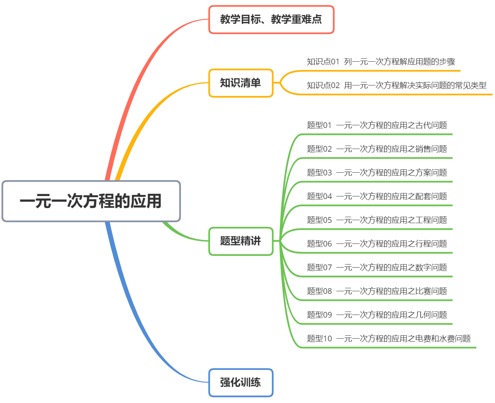

教学目标 | 1. 能从实际问题中抽象出等量关系，建立一元一次方程模型，解决简单的和、差、倍、分问题、行程问题、工程问题等。 2. 经历分析、设元、列方程、解方程、检验的完整过程，提升逻辑推理能力和分析、解决问题的能力。 3. 体会方程思想，感受数学与生活的紧密联系，增强应用数学知识解决实际问题的意识。 |
教学重难点 | 1.重点 （1）正确分析各类实际问题中的等量关系。 （2）根据等量关系列出一元一次方程并求解，解决实际问题。 2.难点 （1）从复杂的文字描述中准确提取隐藏的等量关系 ，如行程问题中的路程、速度、时间关系，工程问题中的工作量、工作效率、工作时间关系等。 （2）合理设未知数，尤其是涉及多个量的题目，选择合适的未知量，避免因未知数设置不当导致方程复杂难解。 |

知识点01 列一元一次方程解应用题的步骤
①审：审题，分析题中已知什么，求什么，明确各数量之间关系
②设：设未知数（一般求什么，就设什么为x）
③找：找出能够表示应用题全部意义的一个相等关系
④列：根据这个相等关系列出需要的代数式，进而列出方程
⑤解：解所列出的方程，求出未知数的值
⑥答：检验所求解是否符合题意，写出答案（包括单位名称）
知识点02 用一元一次方程解决实际问题的常见类型
1.行程问题：路程＝速度×时间
2.顺水逆水问题：顺水速度=船速+水速；逆水速度=船速-水速
3.和差倍分问题：增长量＝原有量×增长率
4.利润问题：商品利润＝商品售价－商品进价
5.工程问题：工作量＝工作效率×工作时间，各部分劳动量之和＝总量
6.银行存贷款问题：本息和＝本金+利息，利息＝本金×利率×期数
7.数字问题：多位数的表示方法：例如：
【即学即练】
1．（2025·陕西榆林·一模）我国古代数学名著《九章算术》中记载“粟米之法；粟率五十；粝米三十．今有米在十斗桶中，不知其数．满中添粟而春之，得米七斗．问故米几何？”意思为：50斗谷子能出30斗米，即出米率为 ．今有米在容量为10斗的桶中，但不知道数量是多少．再向桶中加满谷子，再舂成米，共得米7斗．问原来有多少斗米？（不计损耗）
．今有米在容量为10斗的桶中，但不知道数量是多少．再向桶中加满谷子，再舂成米，共得米7斗．问原来有多少斗米？（不计损耗）
【答案】原来有 斗米
斗米
【分析】本题考查了列一元一次方程解应用题．设原来有x斗米，则后加入
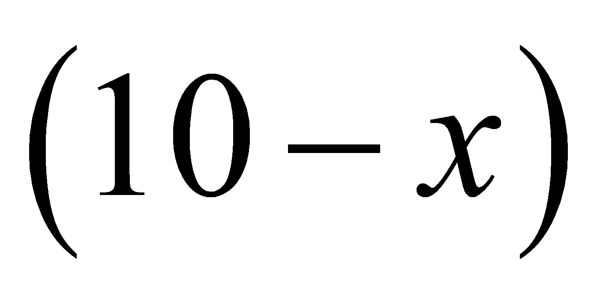
斗谷子，由题意列出方程，解方程即可．【详解】解：设原来有x斗米，则后加入斗谷子，
根据题意，得
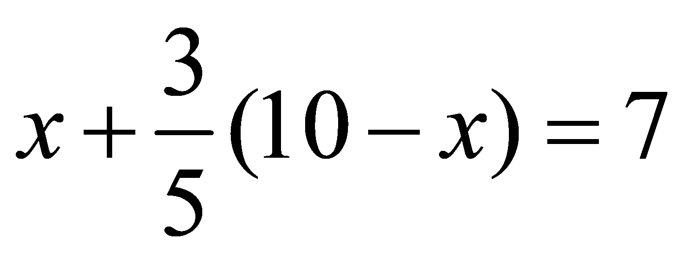
，解得
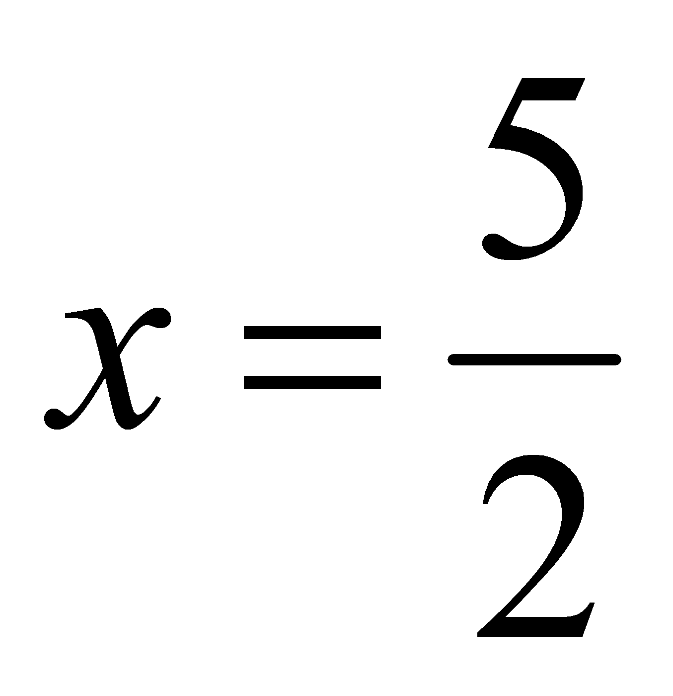
，答：原来有斗米．
2．（23-24七年级上·浙江绍兴·期末）某店用10000元的资金购进A，B两种商品共400件，并在“双十二”期间销售，两种商品的进价和售价如表所示：
进价（元） | 售价（元） | |
| 40 | 60 |
| 20 | 30 |
(1)求 商品购进的数量．
商品购进的数量．
(2)商品售出
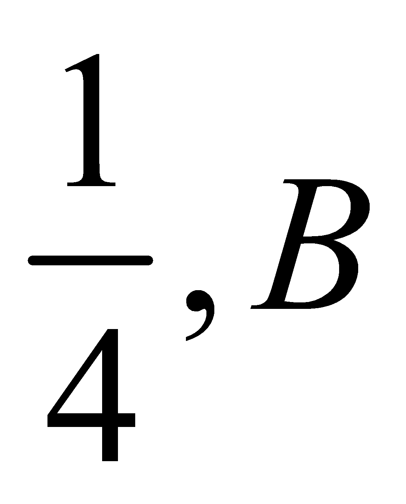
商品售出 后，由于销售情况不理想，该店推出“买一件商品送一件
后，由于销售情况不理想，该店推出“买一件商品送一件 商品，单独购买商品优惠
商品，单独购买商品优惠 元”的促销活动．一段时间后，A，B两种商品全部售完．已知剩余的商品都参加了促销活动，销售A，B两种商品共获利2125元，求的值．
元”的促销活动．一段时间后，A，B两种商品全部售完．已知剩余的商品都参加了促销活动，销售A，B两种商品共获利2125元，求的值．【答案】(1)购进商品的数量为100件
(2)
【分析】本题主要考查了一元一次方程的应用，根据等量关系，列出方程，是解题的关键．
（1）设购进商品的数量为 件，则购进商品的数量为
件，则购进商品的数量为
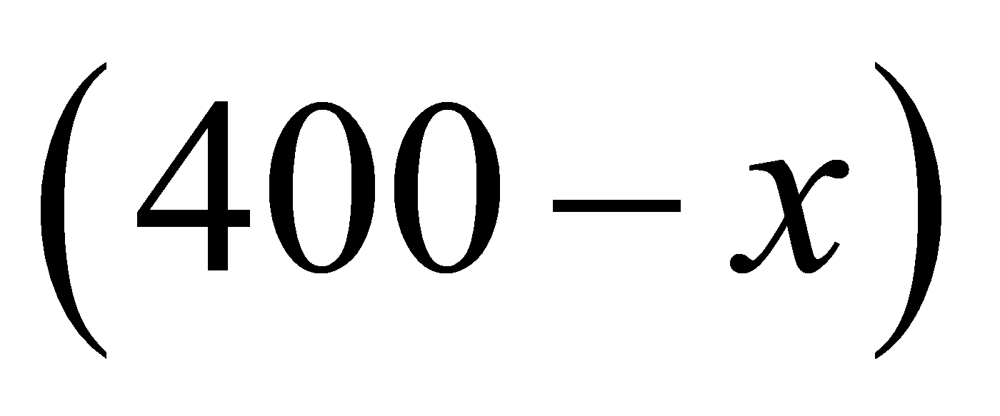
件，根据400件商品的花的费用为10000元，列出方程，解方程即可；（2）根据销售A，B两种商品共获利2125元，列出方程，解方程即可．
【详解】（1）解：设购进商品的数量为件，则购进商品的数量为件，
依题意得
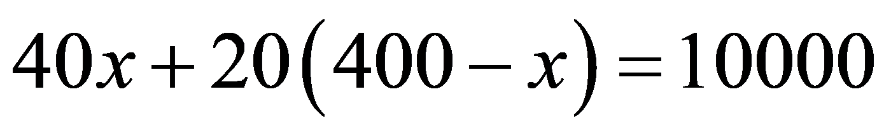
，解得： ，
，
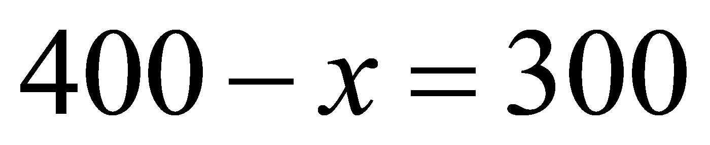
（件），答：购进商品的数量为100件，则购进商品的数量为300件；
（2）解：商品售出 ，即
，即
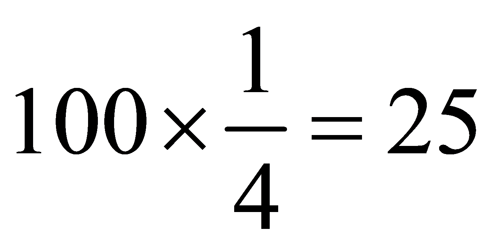
（件），剩余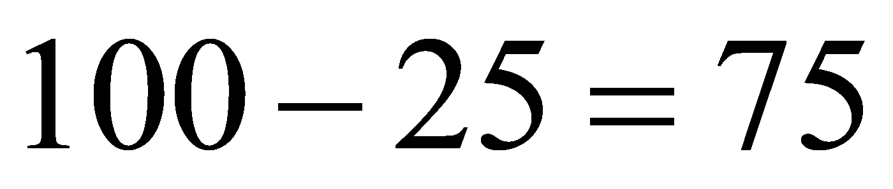
（件），商品售出，即
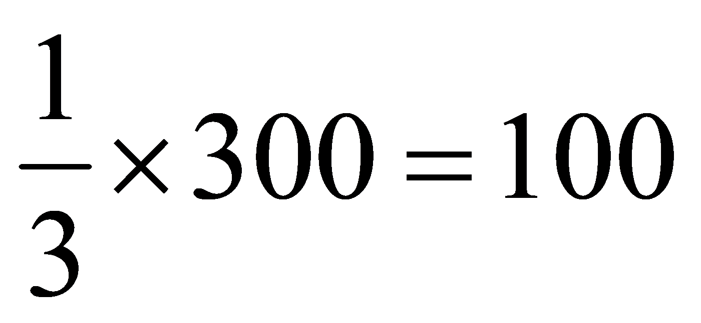
（件），剩余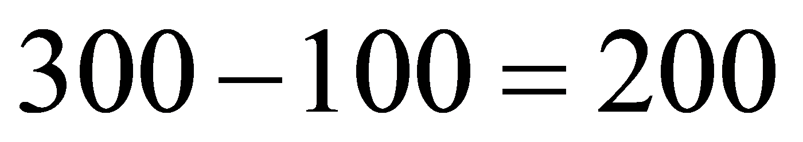
（件），剩余的商品都参加了促销活动，即促销活动卖出商品75件，赠送商品75件，再剩下的125件商品以优惠全部卖出，
依题意得：
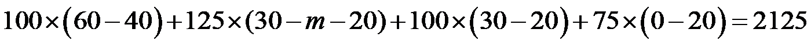
，整理得
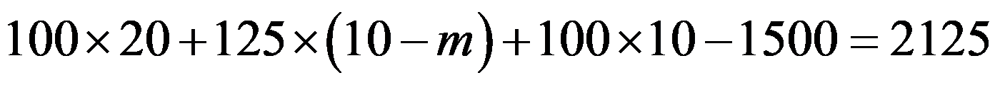
，即
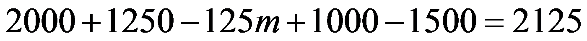
，解得．
3．（2025·北京·模拟预测）在“一盔一带”为主题的交通安全宣传和教育下，人们骑电动车、摩托车佩戴头盔的安全意识不断提高 某安全用品商店计划购进一批安全头盔进行销售于是商店老板联系了批发商，他们之间的对话如下：
某安全用品商店计划购进一批安全头盔进行销售于是商店老板联系了批发商，他们之间的对话如下：
你好 |
我有三种型号的安全头盔，批发价分别是 ①一次性累计购买 ②一次性累计购买 |
 请问你那里的安全头盔批发价是多少？
请问你那里的安全头盔批发价是多少？ 元
元 元
元(1)若该商店计划一次性购进型安全头盔 个和型安全头盔
个和型安全头盔 个，共需多少钱？
个，共需多少钱？
(2)若该商店计划用
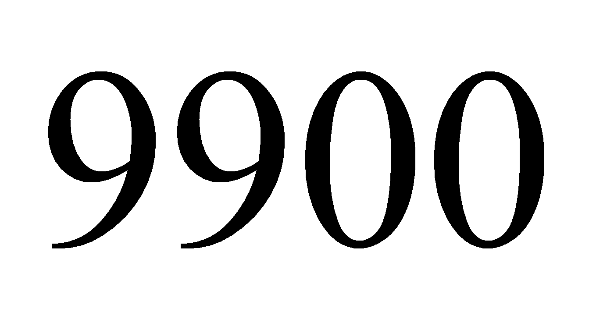
元一次性购进两种不同型号的安全头盔 个，请你研究一下该商店的进货方案有哪几种？
个，请你研究一下该商店的进货方案有哪几种？【答案】(1)共需要
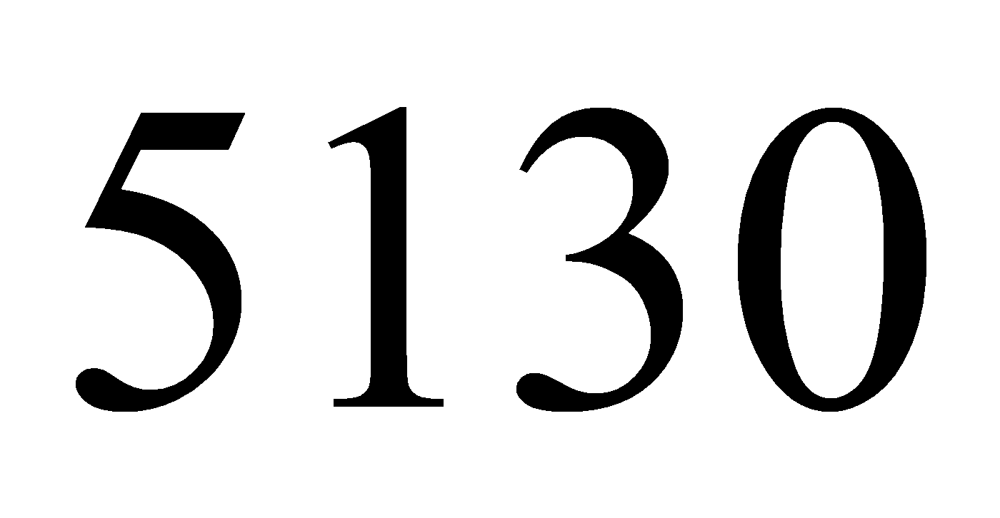
元(2)该商店的进货方案有 种，方案
种，方案 ：购进
：购进 个型安全头盔，个型安全头盔；方案：购进
个型安全头盔，个型安全头盔；方案：购进 个型安全头盔，个
个型安全头盔，个 型安全头盔．
型安全头盔．
【分析】本题考查了有理数混合运算的运用，一元一次方程的应用；能找出等量关系式，列出方程求解是解题的关键．
（1）根据题意列出算式得
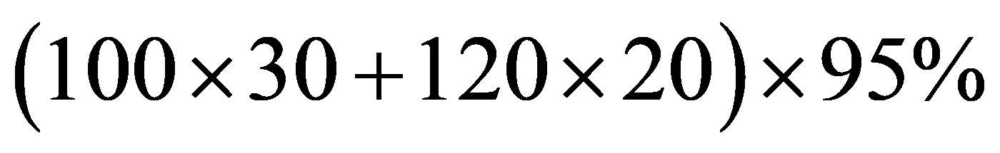
，即可求解；（2）购进，两种不同型号的安全头盔，购进，两种不同型号的安全头盔，购进，两种不同型号的安全头盔，分别用一元一次方程求解即可．
【详解】（1）解：根据题意得：
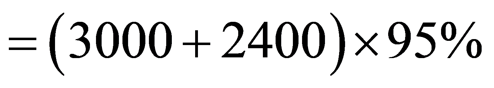
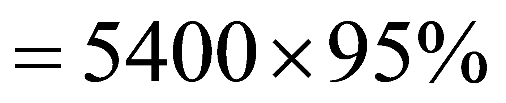
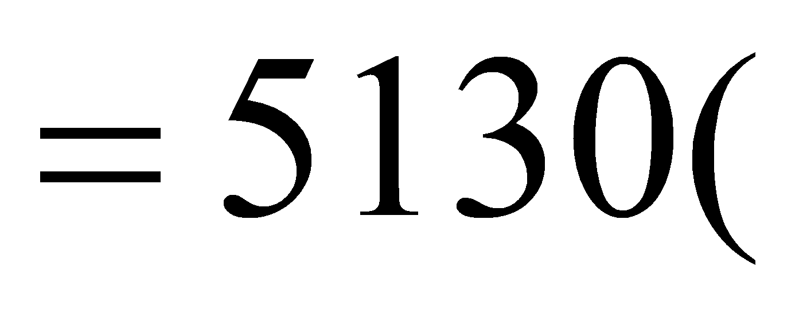
元 ．
．答：共需要元；
（2）解：当购进，两种不同型号的安全头盔时，设购进 个型安全头盔，则购进
个型安全头盔，则购进
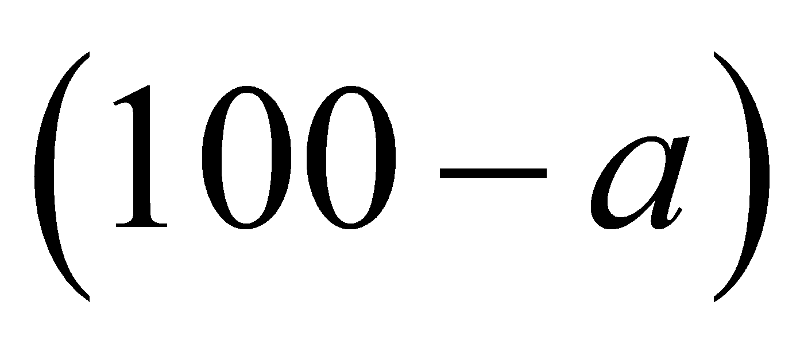
个型安全头盔，根据题意得：
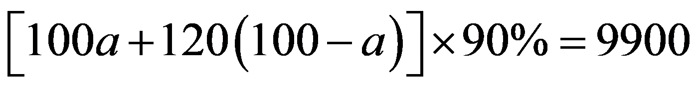
，解得： ，
，
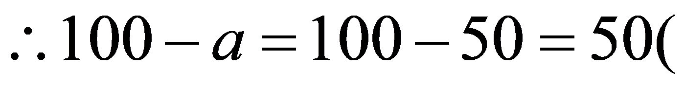
个；当购进，两种不同型号的安全头盔时，设购进 个型安全头盔，则购进
个型安全头盔，则购进
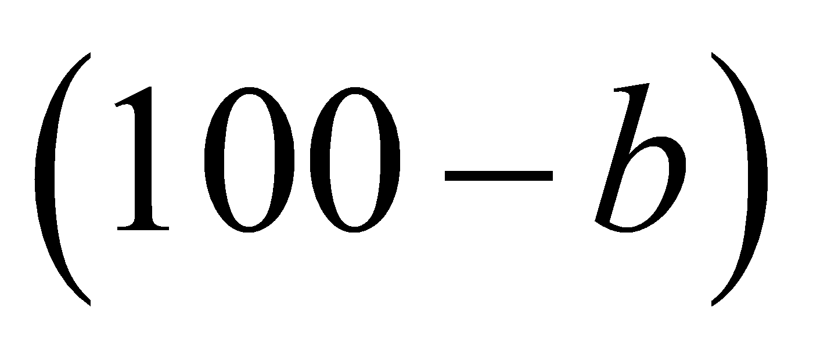
个型安全头盔，根据题意得：
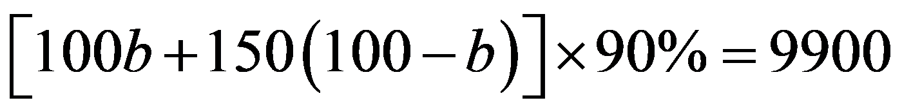
，解得：
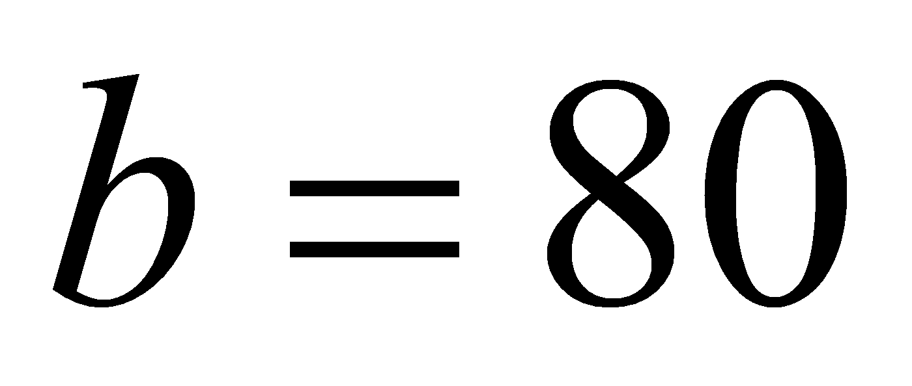
，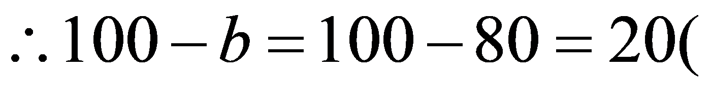
个；当购进，两种不同型号的安全头盔时，设购进 个型安全头盔，则购进
个型安全头盔，则购进
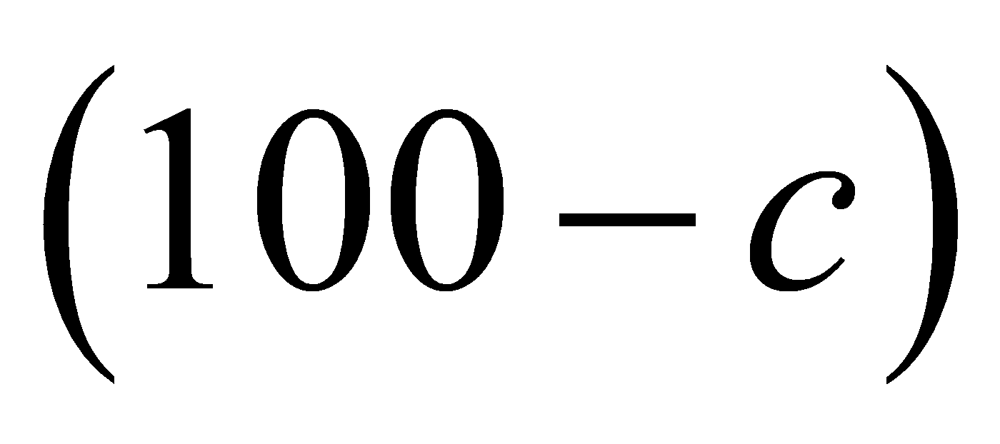
个型安全头盔，根据题意得：
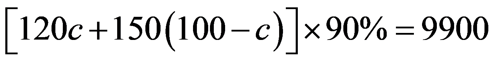
，解得：
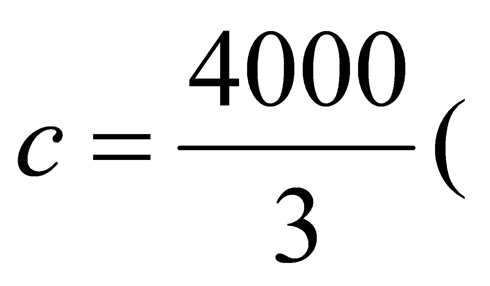
不符合题意，舍去． 该商店的进货方案有种，
该商店的进货方案有种，
方案：购进个型安全头盔，个型安全头盔；
方案：购进个型安全头盔，个型安全头盔．

题型01 一元一次方程的应用之古代问题
【典例1】（24-25七年级上·陕西汉中·期末）列一元一次方程解应用题：我国古代数学著作《孙子算经》中有如下问题：“今有三人共车，二车空；二人共车，九人步，问车有几何？”其意思是：“每车坐3人，空出来2车；每车坐2人，9人没车坐，问车有多少辆？”
【答案】15辆
【分析】本题考查一元一次方程的应用，能根据题意找出等量关系，并根据等量关系列出方程是解决此题的关键．设车有x辆，根据“今有三人共车，二车空；二人共车，九人步”，即可得出关于x的一元一次方程，解方程即可得解．
【详解】解：设车为x辆，根据题意，得
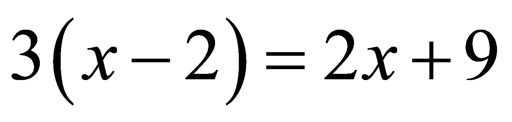
解得，
答：车有15辆．
【变式1】（24-25七年级上·辽宁大连·期末）《孙子算经》中记载了这样一道题：“今有百鹿进城，每家取一鹿，不尽，又三家合取一鹿，恰尽”．问：有多少户人家？大意为：有100头鹿，首先每户分一头鹿，发现还有剩余，将剩下的鹿给每3户分一头，恰好分完，问共有多少户人家？
【答案】共有75户人家
【分析】本题考查了一元一次方程的应用，找准等量关系是解题的关键．设共有x户人家，根据“有100头鹿，首先每户分一头鹿，发现还有剩余，将剩下的鹿给每3户分一头，恰好分完”，可列出关于x的一元一次方程，解之即可得出结论．
【详解】解：设共有户人家，
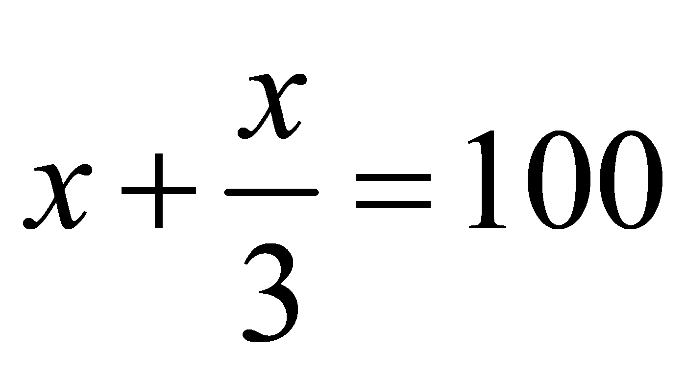
，解得 ，
，
答：共有75户人家．
【变式2】（24-25七年级上·浙江金华·期末）相传有神龟出于洛水，其背上有此图案（图1），史称“洛书”，图2是洛书的数字表示．这也就是术数中常说的“九宫格”，就是将已知的9个数填入 的方格中，使每一行、每一列以及两条斜对角线上的数字之和都相等，图3，图4的幻方均满足此规律．
的方格中，使每一行、每一列以及两条斜对角线上的数字之和都相等，图3，图4的幻方均满足此规律．
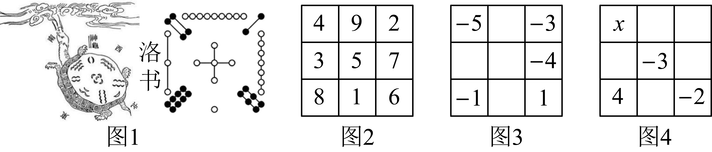
(1)请填出图3幻方空格中的数．
(2)求图4幻方中的值．
【答案】(1)见解析
(2)
【分析】本题考查了一元一次方程的应用以及规律型：数字的变化类．
（1）由第3列上的3个数之和及每一行、每一列以及两条斜对角线上的数字之和都相等，即可求出其他方格中的数，将其填入图3中即可；
（2）由对角线及第1列上的3个数之和相等，可求出第2行第1个方格中的数，利用两对角线上的3个数之和相等，可求出第1行第3个方格中的数，再结合对角线及第1列上的3个数之和相等，可列出关于x的一元一次方程，解之即可得出结论．
【详解】（1）解：∵第3列上的3个数之和为
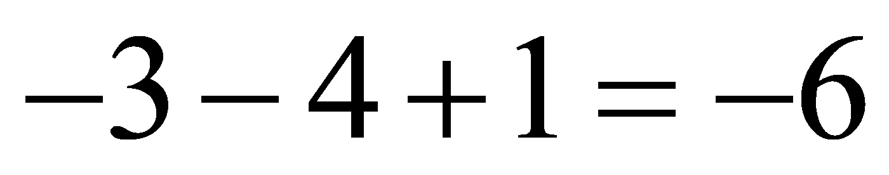
，∴第1行第2个方格中的数为
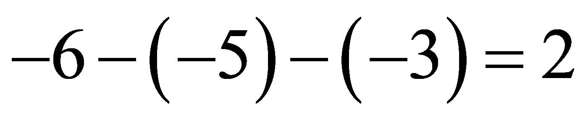
，第2行第1个方格中的数为
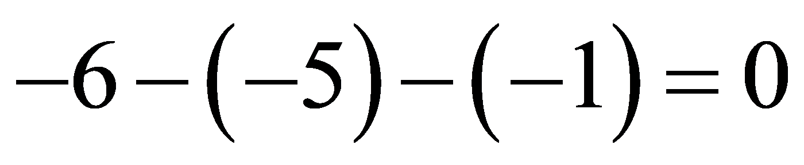
，第2行第2个方格中的数为
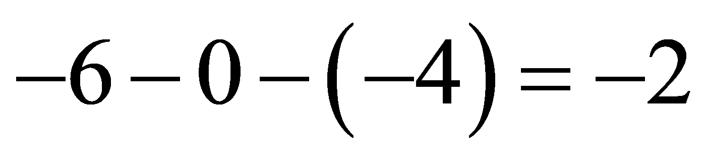
，第3行第2个方格中的数为
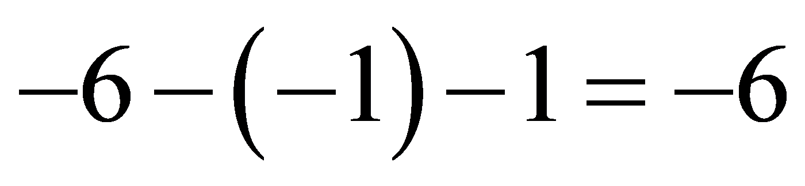
，将图3中的数据补充完整，如图所示；
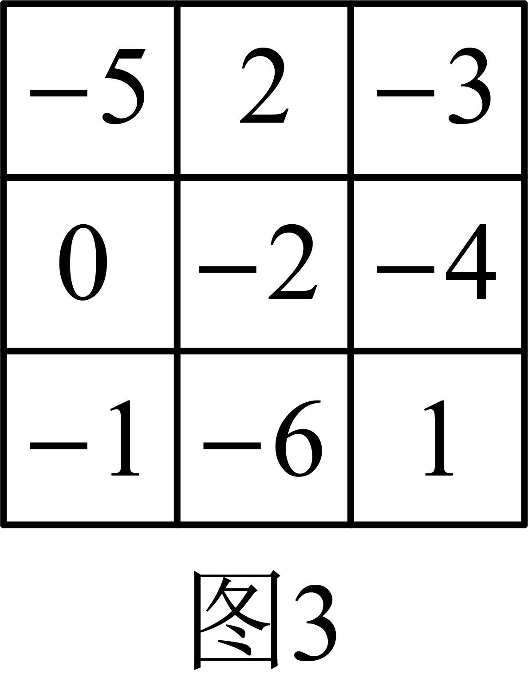
（2）解：第2行第1个方格中的数为
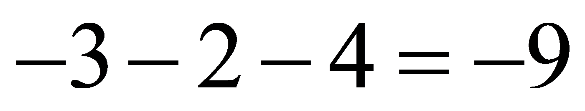
，第1行第3个方格中的数为
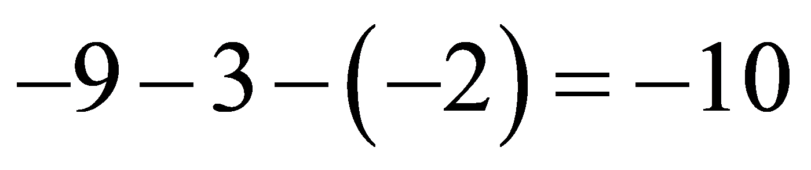
，根据题意得：
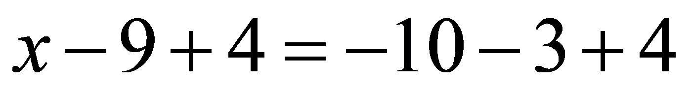
，解答： ．
．
答：图4幻方中x的值为．
【变式3】（24-25九年级下·安徽淮南·开学考试）《周髀算经》是中国现存最早的数理天文著作．书中记载这样一道题：“今有女子不善织，日减功迟．初日织五尺，末日织一尺，今三十日织讫．问织几何？”
译文：现有一个不擅长织布的女子，织布的速度越来越慢，并且每天减少的数量相同，第一天织了五尺布，最后一天仅织了一尺布，30天完工，问一共织了多少布？请解答上述问题．

【答案】一共织了 尺布
尺布
【分析】本题考查了一元一次方程的应用；设每天减少尺布，根据题意得出
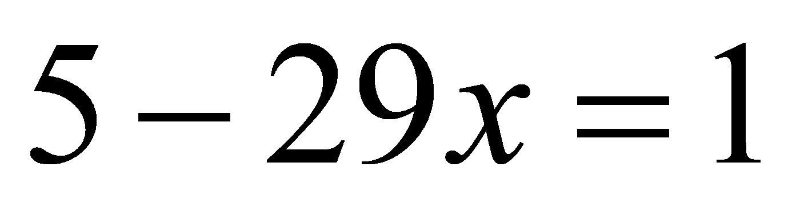
，解方程得出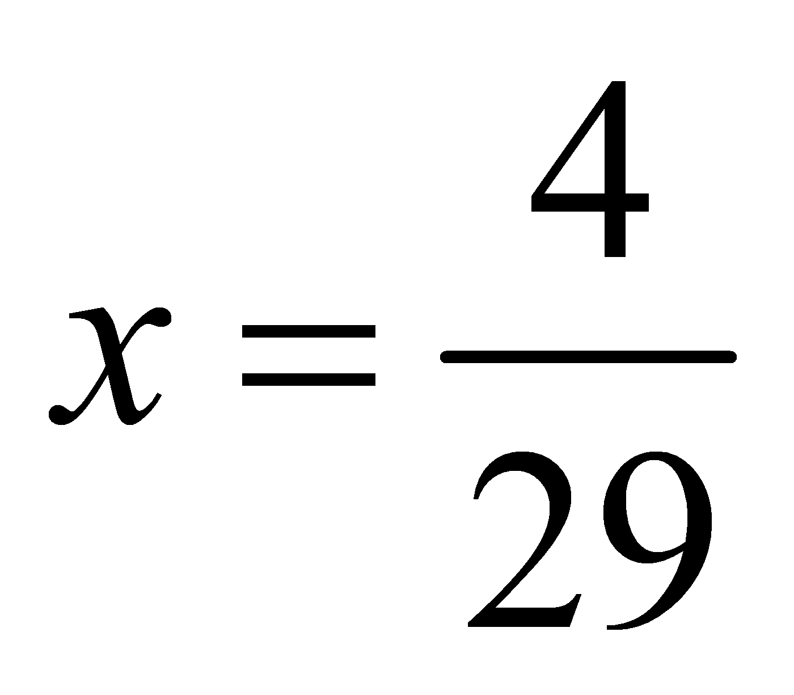
，进而根据题意根据列出算式进行计算即可求解．【详解】解：设每天减少尺布，
∵第一天织了五尺布，最后一天仅织了一尺布，30天完工，
∴，解得，
∴
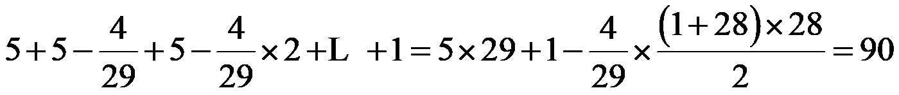
（尺）．答：一共织了尺布．
题型02 一元一次方程的应用之销售问题
【典例2】（24-25七年级下·重庆·阶段练习）随着
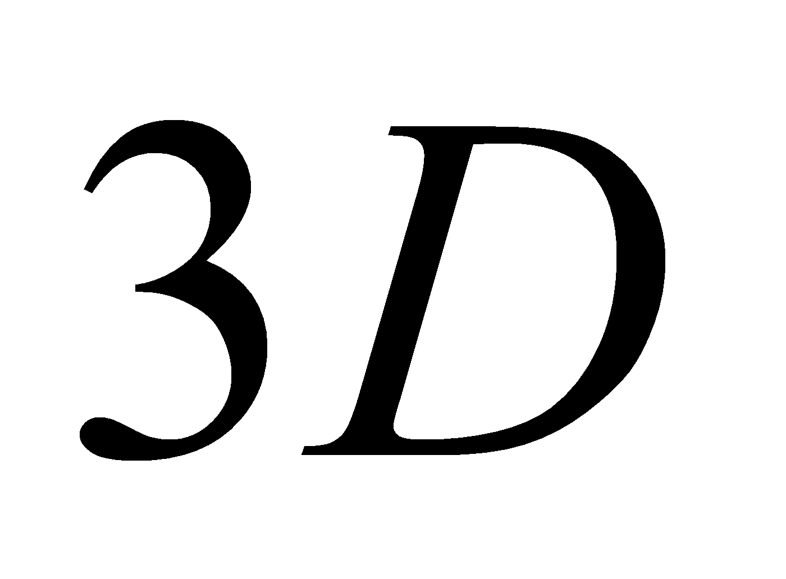
打印技术越来越成熟，家用打印机也逐步走进各家各户．某公司根据市场需求代理甲、乙两种型号的家用打印机，每台甲型打印机比每台乙型打印机进价高 元．
元．(1)设每台乙型打印机为元，则每台甲型打印机为 元(用x表示)．
(2)若购买 台甲型打印机和台乙型打印机共花费
台甲型打印机和台乙型打印机共花费 元，求每台甲型、乙型打印机的进价各是多少元？
元，求每台甲型、乙型打印机的进价各是多少元？
【答案】(1)
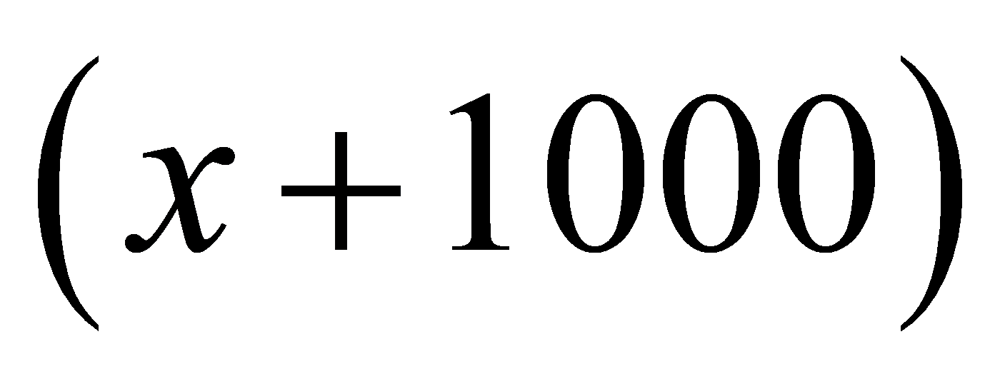
(2)每台甲型、乙型打印机的进价各是
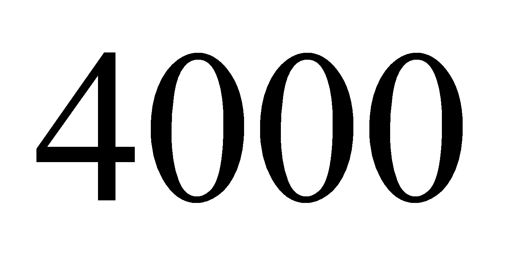
元，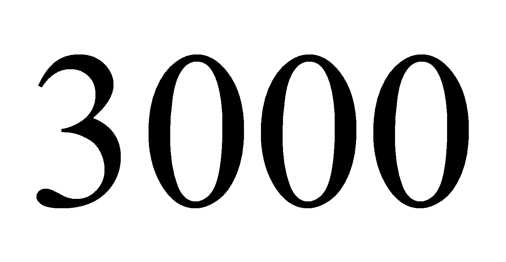
元【分析】本题考查一元一次方程的应用、列代数式，写出每台甲型打印机的进价、掌握一元一次方程的解法是解题的关键．
（1）根据“每台甲型打印机比每台乙型打印机进价高元”计算即可；
（2）根据题意，列关于的一元一次方程并求解即可．
【详解】（1）解：每台甲型打印机为元．
故答案为：．
（2）根据题意，得，
解得，
元．
答：每台甲型打印机的进价为元，每台乙型打印机的进价为元．
【变式1】（24-25九年级下·安徽六安·开学考试）试根据图中信息，解答下列问题：

(1)购买5根跳绳需_____元，购买15根跳绳需_____元．
(2)小红比小明多买3根，付款时小红反而比小明少9元，请求出小红购买跳绳的根数．
【答案】(1)75，157.5
(2)小红购买跳绳12根
【分析】本题考查了一元一次方程的应用，解题的关键是读懂题意，找到等量关系列出方程．
（1）根据题意列出算式即可；
（2）设小红购买跳绳根，根据题意列出方程进而求解．
【详解】（1）解：∵（元），（元），
∴购买5根跳绳需75元，购买15根跳绳需元；
故答案为： ，；
，；
（2）解：设小红购买跳绳根，则小明购买跳绳根，
根据题意得：
，
解得： ．
．
答：小红购买跳绳12根．
【变式2】（24-25七年级上·湖北武汉·阶段练习）小张开了一家皮鞋店，为尽快出售，小张决定将皮鞋打折销售．若每双皮鞋按标价的4折出售将亏40元，而按标价的8折出售将赚40元．
(1)请你算一算每双皮鞋的标价和进价各是多少元？
(2)该皮鞋改款后，小张又以同样的进价进货500件，若标价不变，按标价销售了300件后，剩下的进行大甩卖，为了尽快减少库存，又要保证盈利2万元，请你告诉小张最低能打几折？
【答案】(1)每双皮鞋的标价为200元，进价为120元
(2)小张最低能打5折
【分析】本题考查了一元一次方程的应用，理解题意找准等量关系列出方程是解题的关键．
（1）设每双皮鞋的标价为元，则每双皮鞋的进价为元，根据题意列出方程，求出的值，即可解答；
（2）设小张最低能打 折，根据题意列出方程，求出的值即可解答．
折，根据题意列出方程，求出的值即可解答．
【详解】（1）解：设每双皮鞋的标价为元，则每双皮鞋的进价为元，
由题意得，，
解得： ，
，
则，
答：每双皮鞋的标价为200元，进价为120元．
（2）解：设小张最低能打折，
由题意得，，
解得： ，
，
答：小张最低能打5折．
【变式3】（24-25七年级上·云南临沧·阶段练习）某商店购进甲、乙两种型号的节能灯，若购买 只甲型号节能灯和
只甲型号节能灯和 只乙型号节能灯共需元．其中甲、乙两种型号的节能灯的进价、售价如下表：
只乙型号节能灯共需元．其中甲、乙两种型号的节能灯的进价、售价如下表：
型号 | 进价（元/只） | 售价（元/只） |
甲型 |
|
|
乙型 |
|

(1)求甲、乙两种型号的节能灯的进价各是多少？
(2)第一次该商店购进甲、乙两种型号的节能灯共 个，全部售完后总利润（利润
个，全部售完后总利润（利润 售价
售价 进价）为
进价）为 元，求该商店甲、乙两种型号的节能灯分别购进多少只？
元，求该商店甲、乙两种型号的节能灯分别购进多少只？
(3)第二次该商店购进了与第一次一样多的甲、乙两种型号的节能灯，由于两种节能灯的进价都比第一次优惠了 ，该商店准备对乙型节能灯进行打折销售，让利于客户，甲型节能灯售价不变，全部售完后总利润比第一次还多赚
，该商店准备对乙型节能灯进行打折销售，让利于客户，甲型节能灯售价不变，全部售完后总利润比第一次还多赚 元，求乙型节能灯打了几折？
元，求乙型节能灯打了几折？
【答案】(1)甲型节能灯的进价是 元
元 只，乙型节能灯的进价是
只，乙型节能灯的进价是 元/只
元/只
(2)该商店购进甲型节能灯只，购进乙型节能灯 只
只
(3) 折
折
【分析】本题主要考查一元一次方程的应用；
（1）根据表格数据，结合题意，列出一元一次方程，解方程，即可求解；
（2）设购进甲型节能灯只，则购进乙型节能灯只，根据题意列出一元一次方程，解方程，即可求解；
（3）设乙型节能灯打了折，根据题意，列出一元一次方程，解方程，即可求解．
【详解】（1）解：根据题意，得，
解得 ，
，
，
答：甲型节能灯的进价是20元/只，乙型节能灯的进价是30元/只；
（2）设购进甲型节能灯只，则购进乙型节能灯只，根据题意，得，
解得 ，
，
．
答：该商店购进甲型节能灯120只，购进乙型节能灯80只；
（3）设乙型节能灯打了折，根据题意，得
200只节能灯的进价为（元），
200只节能灯的售价为（元），
全部售完200只节能灯的总利润为，
解得 ．
．
答：乙型节能灯打了9折．
题型03 一元一次方程的应用之方案问题
【典例3】按照“双减”政策，丰富课后托管服务内容，学校准备订购一批排球和跳绳，经过市场调查后发现排球120元/个，跳绳20元/根．某体育用品商店提供A、B两种优惠方案（顾客只能选择其中一种方案）：
A方案：买一个排球送一根跳绳；
B方案：排球和跳绳都按定价的90%付款．
(1)若学校要购买排球50个，跳绳100根，则选择________方案更优惠
若学校要购买排球50个，跳绳300根，则选择________方案更优惠；
(2)若学校要购买排球50个，跳绳x根（ ），请问购买多少根跳绳时，A、B两种方案所需要的钱数一样多？
），请问购买多少根跳绳时，A、B两种方案所需要的钱数一样多？
【答案】(1)A，B
(2)购买200根跳绳时，A、B两种方案所需要的钱数一样多
【分析】本题考查了一元一次方程的应用、有理数的混合运算的应用，找准等量关系，正确列出一元一次方程是解题的关键．
（1）利用总价 单价
单价 数量，结合商店给出的两种优惠方案，可求出选择各方案所需费用，比较后即可得出结论；
数量，结合商店给出的两种优惠方案，可求出选择各方案所需费用，比较后即可得出结论；
（2）根据选择A、B两种方案所需要的钱数一样多，可列出关于x的一元一次方程，解之即可得出结论．
【详解】（1）若学校要购买排球50个，跳绳100根，
选择A方案所需费用为（元）；
选择B方案所需费用为（元），
∵，
∴此时选择A方案更优惠；
若学校要购买排球50个，跳绳300根，
选择A方案所需费用为（元）；
选择B方案所需费用为（元），
∵，
∴此时选择B方案更优惠．
故答案为：A，B；
（2）根据题意得：，
解得： ．
．
答：购买200根跳绳时，A、B两种方案所需要的钱数一样多．
【变式1】“中国最美的五大沙漠之一”—鸣沙山月牙泉风景名胜区，是国家级旅游景区，寒假期间拟定门票价格为50元/张，团队票可选择两种购票优惠方案：
方案一：全体人员打八折．
方案二：有 人可以免票，剩下的人员打九折．
人可以免票，剩下的人员打九折．
(1)若某团队有 人，为节省购票费用，则该团队应该选择哪种购票方案？
人，为节省购票费用，则该团队应该选择哪种购票方案？
(2)若某团队无论选择哪种方案购票，费用恰好一样，则该团队共有多少人？
【答案】(1)该团队应该选择方案一
(2)该团队共有 人
人
【分析】本题考查一元一次方程的应用，解题的关键是明确方案一和方案二的收费方式，再列出方程解题．
（1）分别计算出方案一和方案二的费用，再比较哪种更划算即可；
（2）设团队有 人，根据题意，可以列出方程，再求解即可．
人，根据题意，可以列出方程，再求解即可．
【详解】（1）解：由题意可得：
方案一的花费为：（元）
方案二的花费为：（元）
∵，
∴该团队应该选择方案一．
（2）解：该团队共有人．
根据题意，得，
解得
答：该团队共有人．
【变式2】学校10月19日举办体育文化艺术节活动，准备单色圆珠笔、双色圆珠笔、三色圆珠笔三种圆珠笔共1000支作奖励（每种圆珠笔都要有），其中双色圆珠笔的单价比单色圆珠笔的单价贵0.2元，买5支双色圆珠笔和8支单色圆珠笔共需要6.2元．
三色圆珠笔级别 | 球珠直径 | 球珠直径 |
单价 | 1元 | 1.5元 |
(1)双色圆珠笔和单色圆珠笔的单价分别是多少元？
(2)若某超市的三色圆珠笔根据球珠直径有两个级别，学校只能从中选择一个级别．价格如上表：现在学校用880元去购买这三种圆珠笔，且单色圆珠笔和三色圆珠笔的数量是相同的，应该选样哪种级别的三色圆珠笔比较合适？购买方案是什么？请说明理由．
【答案】(1)双色圆珠笔的单价为 元，单色圆珠笔的单价为
元，单色圆珠笔的单价为 元
元
(2)应该选择球珠直径 的三色圆珠笔比较合适，购买方案是购买单色圆珠笔，三色圆珠笔的数量都是400支，购买双色圆珠笔数量为200支
的三色圆珠笔比较合适，购买方案是购买单色圆珠笔，三色圆珠笔的数量都是400支，购买双色圆珠笔数量为200支
【分析】本题主要考查一元一次方程的应用，找准等量关系，正确列出一元一次方程是解题的关键．
（1）设双色圆珠笔的单价为x元，则单色圆珠笔的单价为元，根据买5支双色圆珠笔和8支单色圆珠笔共需要元列出方程解出x的值可得答案；
（2）设购买单色圆珠笔，三色圆珠笔的数量都是m支，分两种情况：若购买球珠直径 的三色笔，与购买球珠直径的三色笔，列出方程，解方程并检验可得答案．
的三色笔，与购买球珠直径的三色笔，列出方程，解方程并检验可得答案．
【详解】（1）解：设双色圆珠笔的单价为x元，则单色圆珠笔的单价为元，
根据题意得：，
解得： ，
，
，
 双色圆珠笔的单价为元，单色圆珠笔的单价为元；
双色圆珠笔的单价为元，单色圆珠笔的单价为元；
（2）设购买单色圆珠笔，三色圆珠笔的数量都是m支，则购买双色圆珠笔数量为支，
若购买球珠直径的三色笔，
则，
解得，
∴这种情况不符合题意；
若购买球珠直径的三色笔，
则，
解得，
，
应该选择球珠直径的三色圆珠笔比较合适，购买方案是购买单色圆珠笔，三色圆珠笔的数量都是400支，购买双色圆珠笔数量为200支．
【变式2】2025年是中国农历乙巳蛇年，胖东来超市有蛇年吉祥物毛绒公仔“已升升”A，B两种款式出售．B种款式每个售价比A种款式贵10元；购买20个A种蛇年吉祥物和30个B种蛇年吉祥物共需花费2300元．

(1)A，B两种款式吉祥物每件售价各是多少？
(2)复兴中学计划购买B种款式吉祥物在寒假期间家访时送给留守儿童作为新年礼物，且购买数量超过50个，超市了解情况后特别给出两种优惠方案：
方案一：每个均按原售价的7折优惠；
方案二：前50个按原售价8折优惠，超过50个的部分每个按半价出售．
复兴中学选择哪种方案购买更合算？
(3)年货节期间，A款吉祥物按原售价9折出售，B款吉祥物按原售价的8.8折出售，打折后一周内两款吉祥物共售出100个，若A款吉祥物进价25元/个，B款吉祥物进价30元/个，结果两款吉祥物总利润一样，则A、B两款吉祥物这周内各售出多少个？
【答案】(1) 种款式吉祥物每件售价40元，
种款式吉祥物每件售价40元， 种款式吉祥物每件售价50元；
种款式吉祥物每件售价50元；
(2)见详解
(3)A、B两款吉祥物这周内分别售出 个，个
个，个
【分析】本题考查列代数式、一元一次方程的应用，正确掌握相关性质内容是解题的关键．
（1）设种款式吉祥物每件售价 元，则种款式吉祥物每件售价元，根据题意列方程并求解即可；
元，则种款式吉祥物每件售价元，根据题意列方程并求解即可；
（2）设购买B种款式吉祥物为个，按方案一购买需要元，按方案二购买需要元，分别写出、关于的表达式，再比较二者大小即可；
（3）设购买种款式吉祥物 个，则购买种款式吉祥物个，根据题意列关于的一元一次方程，再进行解方程，即可作答．
个，则购买种款式吉祥物个，根据题意列关于的一元一次方程，再进行解方程，即可作答．
【详解】（1）解：设种款式吉祥物每件售价元，则种款式吉祥物每件售价元．
根据题意，得，
解得，
∴（元），
 种款式吉祥物每件售价40元，种款式吉祥物每件售价50元；
种款式吉祥物每件售价40元，种款式吉祥物每件售价50元；
（2）解：设购买B种款式吉祥物为个，按方案一购买需要元，按方案二购买需要元．
根据题意，，
．
当时，则，
解得；
当时，则，
解得；
当时，则，
解得；
∴
∴当购买B种款式吉祥物大于 个时，选择方案二合算；
个时，选择方案二合算；
当购买B种款式吉祥物等于个时，选择方案一和方案二一样合算；
当购买B种款式吉祥物大于 个且小于个时，选择方案一合算；
个且小于个时，选择方案一合算；
（3）解：∵打折后一周内两款吉祥物共售出100个，
∴设购买种款式吉祥物个，则购买种款式吉祥物个，
∵A款吉祥物按原售价9折出售，B款吉祥物按原售价的8.8折出售，且A款吉祥物进价25元/个，B款吉祥物进价30元/个，
∴，
解得．
∴
则A、B两款吉祥物这周内分别售出个，个．
题型04 一元一次方程的应用之配套问题
【典例4】一台仪器由1个A部件和3个B部件构成．用 钢材可以做40个A部件或240个B部件．现要用
钢材可以做40个A部件或240个B部件．现要用 钢材制作这种仪器，应用多少
钢材制作这种仪器，应用多少 钢材做A部件，多少钢材做B部件，才能制作尽可能多的仪器？最多能制成多少台仪器？
钢材做A部件，多少钢材做B部件，才能制作尽可能多的仪器？最多能制成多少台仪器？
【答案】用钢材做A部件，钢材做B部件，才能制作尽可能多的仪器，最多能制成台仪器．
【分析】要制作尽可能多的仪器，需根据A、B部件的配套关系（1个A部件和3个B部件构成一台仪器 ），设用 钢材做A部件，钢材做B部件，通过部件数量的配套比例列方程求解．本题主要考查一元一次方程在配套问题中的应用，熟练掌握根据部件配套比例建立方程是解题的关键．
钢材做A部件，钢材做B部件，通过部件数量的配套比例列方程求解．本题主要考查一元一次方程在配套问题中的应用，熟练掌握根据部件配套比例建立方程是解题的关键．
【详解】解：设用钢材做A部件，则用钢材做B部件．则，
解得 ，
，
∴做B部件的钢材为，做A部件数量：（个），做B部件数量：（个），
可制作仪器数量： 台（此时A部件和B部件数量恰好配套 ），
答：用钢材做A部件，钢材做B部件，才能制作尽可能多的仪器，最多能制成台仪器．
【变式1】今年是长春博硕学校十年校庆，筹备期间，七年级同学承担了制作六面体灯笼的任务、制作一个灯笼需要用2个底面和4个侧面．现共有120张卡纸，已知一张卡纸可以制作10个底面或者20个侧面，为了使制作的底面和侧面刚好配套，用于制作底面的卡纸应该有多少张？
【答案】用60张卡纸做底面
【分析】本题考查了一元一次方程的实际应用，设用张卡纸做底面，用张卡纸做侧面．根据题意列出方程求解即可．
【详解】解：设用张卡纸做底面，用张卡纸做侧面．
根据题意，得
解得
答：用60张卡纸做底面．
【变式2】某车间每天能制作500个甲种零件，或250个乙种零件（同一天内不能同时制作这两种零件），甲、乙两种零件各1个配成1套产品．现要用30天制作最多的成套产品，甲、乙两种零件各应制作多少天？
【答案】甲种零件应制作10天，则乙种零件应制作20天．
【分析】本题主要考查了一元一次方程的应用，解题的关键是根据等量关系式，列出方程．
设甲种零件应制作x天，则乙种零件应制作天，根据生产的两种零件数量相等，列出方程，解方程即可．
【详解】解：设甲种零件应制作x天，则乙种零件应制作天，
根据题意得：，
解得： ，
，
∴，
答：甲种零件应制作10天，则乙种零件应制作20天．
【变式3】某车间为提高生产总量，在原有14名工人的基础上，新调入若干名工人．使得调整后车间的总人数比新调入工人人数的2倍多6人．
(1)求新调入多少名工人？
(2)若该车间每名工人每天可以生产240个螺栓或400个螺母，若1个螺栓需要2个螺母．在新调入工人后，应该安排多少名工人生产螺栓，才能使每天生产的螺栓和螺母刚好配套？
【答案】(1)新调入8名工人
(2)应该安排10名工人生产螺栓，才能使每天生产的螺栓和螺母刚好配套
【分析】本题主要考查了一元一次方程的应用，读懂题意，准确列出方程是解题的关键．
（1）设调入x名工人，根据“调整后车间的总人数是调入工人人数的2倍多6人”列方程，解方程即可得到答案；
（2）先求出工人总人数，设y名工人生产螺栓，则名工人生产螺母，再根据“每名工人每天可以生产240个螺栓或400个螺母，1个螺栓需要2个螺母”列方程，解方程即可．
【详解】（1）解：设调入x名工人，由题意可得：
 ，
，
解得 ，
，
答：新调入8名工人；
（2）解：由（1）得工人总人数为 （名），
（名），
设y名工人生产螺栓，则名工人生产螺母，
由题意可得，，
解得： ，
，
答：应该安排10名工人生产螺栓，才能使每天生产的螺栓和螺母刚好配套．
题型05 一元一次方程的应用之工程问题
【典例5】甲、乙两人共同承包一项工程，甲单独做30天完成，乙单独做20天完成，合同规定15天完成，否则每超过1天罚款1000元．
(1)在规定时间内，甲、乙两人能否完成这项工程？
(2)现两人合作了这项工程的 ，因别处有急事，必须调走1人．调走谁更合适？
，因别处有急事，必须调走1人．调走谁更合适？
【答案】(1)在规定时间内，甲、乙两人能完成这项工程
(2)调走甲更合适
【知识点】工程问题(一元一次方程的应用)
【分析】本题考查了一元一次方程的应用－工程问题．
（1）设甲乙合作需要x天完成，建立方程求出合作时间，再与15进行比较可以得出结论；
（2）先求出完成需要的时间，再求出完成剩余工作量所用的时间及完成剩余工作量的工作效率，然后与甲、乙独自完成这项工作的工作效率进行比较，可以求出结论．
【详解】（1）解：设甲、乙两人合作完成此项工程需x天．
则 ，解得．
，解得．
因为 ，
，
所以在规定时间内，甲、乙两人能完成这项工程；
（2）解：设两人合作a天完成工程的 ．
．
则
解得 ．
．
若调走甲，则乙还需 （天）；
（天）；
若调走乙，侧甲还需 （天）．
（天）．
因为 （天）天，
（天）天，
 （天）天，
（天）天，
所以调走甲更合适．
【变式1】一项工程，甲队单独做需18天，乙队单独做需24天，如果两队合作8天后，余下的工程再由甲队单独完成．
(1)甲队还需多少天才能完成这项工程？
(2)若甲队每天的酬劳为2000元，乙队每天的酬劳为1500元，问完成这项工程共需支付两队多少钱？
【答案】(1)4天
(2)36000元
【知识点】工程问题(一元一次方程的应用)、有理数四则混合运算的实际应用
【分析】本题考查一元一次方程的应用，有理数四则混合运算的应用，根据题意，正确列出方程是解答的关键．
（1）设这项工程为“1”，设甲队还需x天才能完成这项工程，根据“两队的工程和等于1”列方程求解即可．
（2）根据两队完成的天数和各自的报酬求解即可．
【详解】（1）解：设这项工程为“1”，根据题意，甲队、乙队的工作效率分别为， ，
，
设甲队还需x天才能完成这项工程，
根据题意，得 ，
，
解得 ，
，
答：甲队还需4天才能完成这项工程；
（2）解：

（元），
答： 完成这项工程共需支付两队36000元．
【变式2】哈尔滨亚冬会的某个比赛场馆正在装修，装修后产生的建筑垃圾需要清理．计划租用甲、乙两车队清理建筑垃圾，已知甲车队单独运完需要 天，乙车队单独运完需要
天，乙车队单独运完需要 天．乙车队先运了
天．乙车队先运了 天，然后甲、乙两车队合作运完剩下的垃圾．
天，然后甲、乙两车队合作运完剩下的垃圾．
(1)甲、乙两车队合作还需要多少天运完垃圾？
(2)已知甲车队每天的租金 元，比乙车队少元，运完垃圾后共需支付甲、乙两车队租金多少元？
元，比乙车队少元，运完垃圾后共需支付甲、乙两车队租金多少元？
【答案】(1) 天
天
(2) 元
元
【知识点】工程问题(一元一次方程的应用)、有理数四则混合运算的实际应用
【分析】本题主要考查了一元一次方程的实际应用，根据题意找出等量关系并列出方程是解题关键；
（1）根据题意首先可以得知甲车效率为每天运送 ，乙车效率为每天运送
，乙车效率为每天运送 ，据此设甲、乙两车合作还需要
，据此设甲、乙两车合作还需要 天运完垃圾，然后进一步列出方程求解即可；
天运完垃圾，然后进一步列出方程求解即可；
（2）根据甲车队每天的租金元，比乙车队少元，计算求解即可；
【详解】（1）解：设甲、乙两车合作还需要天运完垃圾，
根据题意得： ，
，
解得： ，
，
答：甲、乙两车合作还需要天运完垃圾．
（2）解：乙队一共工作了 天，甲队一共工作了天，
天，甲队一共工作了天，
 ，
，
答：运完垃圾后共需支付甲、乙两车队租金元．
题型06 一元一次方程的应用之行程问题
【典例6】小明、小杰两人在400米的环形赛道上练习跑步，小明每分钟跑280米，小杰每分钟跑220米．若小明、小杰两人同时同地反向出发，那么出发几分钟后，小明，小杰第一次相遇？
【答案】经过 分钟以后小明，小杰第一次相遇
分钟以后小明，小杰第一次相遇
【知识点】行程问题(一元一次方程的应用)
【分析】本题考查了一元一次方程的应用，设分钟以后小明，小杰第一次相遇，根据题意，列出方程，求出，即可求解．
【详解】解：设分钟以后小明，小杰第一次相遇，
由题意可得，，
解得 ，
，
答：经过分钟以后小明，小杰第一次相遇．
【变式1】甲站和乙站相距 ，一列慢车从甲站开出，速度为
，一列慢车从甲站开出，速度为 ，一列快车从乙站开出，速度为
，一列快车从乙站开出，速度为 ．
．
(1)若两车相向而行，慢车先开 ，快车开出多少小时后两车相遇？
，快车开出多少小时后两车相遇？
(2)若两车同时开出，相背而行，多少小时后两车相距 ？
？
(3)若两车同时开出，快车在慢车后面同向而行，多少小时后两车相距 （快车在慢车的后面）？
（快车在慢车的后面）？
【答案】(1)快车开出后两车相遇
(2) 后两车相距
后两车相距
(3)后两车相距
【知识点】行程问题(一元一次方程的应用)
【分析】本题考查了一元一次方程的应用，根据每一问的速度和路程列出关于时间的方程式并求解是解题的关键．
（1）设快车开出 后两车相遇，根据两车行驶路程和为，列出方程式即可解题；
后两车相遇，根据两车行驶路程和为，列出方程式即可解题；
（2）设后两车相距，两车行驶路程和再加上甲站和乙站的距离为，列出方程式即可解题；
（3）设后两车相距，根据快车所走的路程比慢车所走的路程多 ，即可列出方程式，即可解题．
，即可列出方程式，即可解题．
【详解】（1）解：设快车开出后两车相遇．
 ．
．
由题意，得 ，
，
解得．
答：快车开出后两车相遇．
（2）解：设后两车相距．
由题意，得，
解得 ．
．
答：后两车相距．
（3）解：设后两车相距．
由题意，得 ，
，
解得 ．
．
答：后两车相距．
【变式2】已知在数轴上点A表示的数为8，B在A点左侧，且A，B两点间的距离为14．动点P从点A出发，以每秒4个单位长度的速度沿数轴向左匀速运动，点Q从B点向右运动，速度为每秒2个单位，PQ同时出发，设运动时间为 秒．
秒．
(1)数轴上点B表示的数是______；当点P运动到 的中点时，它所表示的数是______．
的中点时，它所表示的数是______．
(2)动点Q从点B出发，以每秒2个单位长度的速度沿数轴向右匀速运动，求：
①当点P和点Q运动多少秒时，点P和点Q第一次相遇？
②当点P运动多少秒时，点P与点Q间的距离为6个单位长度？
【答案】(1) ，1
，1
(2)① 秒；②
秒；② 秒或
秒或 秒
秒
【知识点】数轴上的动点问题、行程问题(一元一次方程的应用)、数轴上两点之间的距离
【分析】本题主要考查了数轴上两点距离计算，解决本题的关键是根据数轴上动点的运动情况列方程．
（1）先根据数轴上两点距离计算公式得到点BB表示的数，再根据两点中点计算公式求解即可；
（2）①根据相遇问题的等量关系，利用动点P的运动距离加上动点Q的运动距离等于A，B两点间的距离，列方程即可求解；
②根据点P与点Q相遇前和相遇后之间的距离为6个单位长度，分两种情况列方程即可求解．
【详解】（1）解∶∵数轴上点A表示的数为8，B在A点左侧，且A，B两点间的距离为14．
∴点B表示的数为 ，
，
当点P运动到的中点时，它所表示的数是，
故答案为∶，1；
（2）解∶①点P和点Q运动t秒时，点P和点Q第一次相遇，
则 ，
，
解得 ，
，
即点P和点Q运动秒时，点P和点Q第一次相遇；
②设点P运动t秒
根据题意得：
当点P与点Q相遇前，点P与点Q距离6个单位长度时，则 ，
，
解得；
当点P与点Q相遇后，点P与点Q距离6个单位长度时，则 ，
，
解得 ，
，
∴当点P运动秒或秒时，点P与点Q间的距离为6个单位长度．
题型07 一元一次方程的应用之数字问题
【典例7】一个两位数，十位数字是个位数字的 2 倍，将两个数对调后得到的新两位数与原两位数的和是99，原两位数是 ．
【答案】63
【知识点】数字问题(一元一次方程的应用)
【分析】本题考查了一元一次方程的应用，找准等量关系，正确列出一元一次方程是解题的关键．设原两位数的个位数字为，则十位数字为 ，根据将两个数对调后得到的新两位数与原两位数的和是99，可列出关于的一元一次方程，解之可求出的值，再将其代入
，根据将两个数对调后得到的新两位数与原两位数的和是99，可列出关于的一元一次方程，解之可求出的值，再将其代入 中，即可求出结论．
中，即可求出结论．
【详解】解：设原两位数的个位数字为，则十位数字为，
根据题意得： ，
，
解得： ，
，
 ，
，
 原两位数是63．
原两位数是63．
故答案为：63．
【变式1】将奇数 至
至 按照顺序排成下表：
按照顺序排成下表：

记表示第 行第
行第 个数，如
个数，如 表示第
表示第 行第
行第 个数是
个数是 ．
．
(1) ；
(2)将表格中的 个阴影格子看成一个整体并平移，所覆盖的个数之和能否等于
个阴影格子看成一个整体并平移，所覆盖的个数之和能否等于 ．若能，求出个数中的最大数；若不能，请说明理由；
．若能，求出个数中的最大数；若不能，请说明理由；
(3)用、的式子表示 ；
(4)若 ，求、的值．
，求、的值．
【答案】(1)
(2)不能，理由见解析
(3)
(4)，
【知识点】数字类规律探索、数字问题(一元一次方程的应用)、有理数四则混合运算的实际应用、列代数式
【分析】本题考查一元一次方程的应用、数字的变化类、列代数式，
（1）根据题意可知 表示第行第个数，每行都有
表示第行第个数，每行都有 个数，所有的数字都是奇数，然后即可计算出相应的值；
个数，所有的数字都是奇数，然后即可计算出相应的值；
（2）先判断，然后设个阴影格子中的数分别为 、、
、、 、，即可列出相应的方程，然后求解即可说明理由；
、，即可列出相应的方程，然后求解即可说明理由；
（3）根据表格中的数据和发现，可以用含、的代数式表示出．
（4）根据题意，可以得到，然后、为整数，，即可得到、的值；
解答本题的关键是明确题意，发现数字的变化特点，找出等量关系，列出相应的方程．
【详解】（1）解：由题意可得，
，
故答案为：；
（2）所覆盖的个数之和不能等于．
理由：设个阴影格子中的数分别为、、、，
由题意得：，
解得： ，
，
∵为整数，
∴所覆盖的个数之和不能等于；
（3）由题意可得，
，
故答案为：；
（4）∵，
∴ ，
，
∴ ，
，
∵、为整数，，
∴，．
【变式2】如图，阶梯图的每个台阶上都标着一个数，从下到上的第1个至第4个台阶上依次标着 ，
， ，1，9，且任意相邻四个台阶上的数的和都相等．
，1，9，且任意相邻四个台阶上的数的和都相等．

(1)前4个台阶上的数的和是多少？
(2)第5个台阶上的数x是多少？
(3)试用含k（k为正整数）的式子表示出数“1”所在的台阶数．
【答案】(1)3
(2)
(3)
【知识点】用代数式表示数、图形的规律、数字类规律探索、有理数加法运算、数字问题(一元一次方程的应用)
【分析】本题考查了图形的变换规律，解题的关键是根据相邻四个台阶上的数的和都相等得出台阶上的数字每4个一循环．
（1）将前4个数字相加可得；
（2）根据“相邻四个台阶上的数的和都相等”，列方程求解即可；
（3）根据“台阶上的数是每4个一循环”求解可得，观察发现，由循环规律即可知道“1”所在的台阶数为．
【详解】（1）解：由题意，得 ．
．
故前4个台阶上的数的和是3．
（2）由题意，得，
所以，
故第5个台阶上的数x是．
（3）由题意知，台阶上的数每4个一循环， ，−2，1，9，，−2，1，9，…
，−2，1，9，，−2，1，9，…
数“1”所在的台阶数为3，7，11，15，19. . .，
所以数“1”所在的台阶数为．
题型08 一元一次方程的应用之比赛问题
【典例8】“办学互助”是萧红中学办学特色之一．七年18班的第一组6名同学，自行组织知识竞赛，共设20道选择题，各题分值相同，每题必答，下表记录的是5名同学的得分情况：
参赛者 | A | B | C | D | E |
答对题数 | 20 | 19 | 18 | 14 | 10 |
答错题数 | 0 | 1 | 2 | 6 | 10 |
得分 | 100 | 94 | 88 | 64 | 40 |
(1)由表格知，答对一题得________分，答错一题得________分；
(2)第6名同学F得了82分，请你帮他算一算，答对了几道题？
【答案】(1)5，
(2)17
【知识点】比赛积分(一元一次方程的应用)、有理数四则混合运算的实际应用
【分析】本题考查的是一元一次方程的应用；
（1）根据表格中参赛者A的成绩和参赛者B的成绩即可求出每答对一道题得分和每答错一道题扣分；
（2）设答对了x道题，则答错了 道题，根据题意列一元一次方程即可求出结论．
道题，根据题意列一元一次方程即可求出结论．
【详解】（1）解：由表格中参赛者A的成绩可知：每答对一道题得 分，
分，
由表格中参赛者B的成绩可知：每答错一道题扣分，
故答案为：5，；
（2）解：设答对了x道题，则答错了道题，
根据题意，得 ，
，
解得 ，
，
答：答对了17道题．
【变式1】在2022年女足亚洲杯决赛中，中国女足以 逆转韩国女足，时隔16年再夺亚洲杯冠军！某学校掀起一股足球热，举行了班级联赛，九（1）班开局11场保持不败，共积25分，按照比赛规则，胜一场积3分，平一场积1分，负一场积0分，求该班获胜的场数．
逆转韩国女足，时隔16年再夺亚洲杯冠军！某学校掀起一股足球热，举行了班级联赛，九（1）班开局11场保持不败，共积25分，按照比赛规则，胜一场积3分，平一场积1分，负一场积0分，求该班获胜的场数．
【答案】九（1）班获胜7场
【知识点】比赛积分(一元一次方程的应用)
【分析】本题考查了一元一次方程的应用，找准等量关系，正确列出一元一次方程是解题的关键．
设九（1）班获胜x场，则平 场，根据九（1）班开局11场共积25分，即可得出关于x的一元一次方程，解之即可得出结论．
场，根据九（1）班开局11场共积25分，即可得出关于x的一元一次方程，解之即可得出结论．
【详解】解：设九（1）班获胜x场，则平场，
根据题意得：，
解得： ．
．
答：九（1）班获胜7场．
【变式2】某校初一（3）班组织生活小常识竞赛，共设20道选择题，各题分值相同，每题必答．下表记录了其中4个参赛者的得分情况．
参赛者 | 答对题数 | 答错题数 | 得分 |
A | 20 | 0 | 100 |
B | 18 | 2 | 88 |
C | 64 | ||
D | 10 | 10 | 40 |
(1)参赛者E说他错了10个题，得分为50分，请你判断可能吗？并说明理由：
(2)参赛者C答对了几道题？请你通过计算说明．
【答案】(1)不可能，详见解析
(2)14
【知识点】比赛积分(一元一次方程的应用)
【分析】本题主要考查了一元一次方程的应用，根据题意发现答对一道得5分、答错一道扣1分成为解答本题的关键．
（1）由参赛者A可得答对1题得5分，设答错1题扣x分，，然后根据题意列方程求解即可；
（2）根据共作答20道，可补全参赛者B、D；设参赛者C答对y题，然后列一元一次方程求解即可．
【详解】（1）不可能，
∵参赛者A答对20题答错0题得100分，
∴答对1题得5分，
设答错1题扣x分，
由参赛者B的得分可得， ．
．
解得 ，
，
∴答错1题扣1分
∴参赛者E说他错了10个题，不可能得50分；
（2）∵共有20题，参赛者B答错2题，
∴答对18题，
∵参赛者D答对10题，
∴答错10题，
设参赛者C答对y题，
由题意得， ，
，
解得．
故参赛者C答对14题．
题型09 一元一次方程的应用之几何问题
【典例9】如图，在中， ，
， ，
， ，点
，点 是
是 的中点，动点
的中点，动点 从
从 点出发，以每秒个单位的速度沿
点出发，以每秒个单位的速度沿 运动．若设点运动的时间是，若
运动．若设点运动的时间是，若 的面积等于
的面积等于 ．那么
．那么 值是（ ）
值是（ ）

A． B． C．或 D．不存在
C．或 D．不存在
【答案】C
【知识点】几何问题(一元一次方程的应用)
【分析】本题考查了三角形的面积公式的运用以及一元一次方程的应用，解答时灵活运用三角形的面积公式求解是关键，同时要注意分类讨论．分当点在 上时，当点在
上时，当点在 上时，两种情况讨论，根据三角形的面积公式建立方程求出其解即可．
上时，两种情况讨论，根据三角形的面积公式建立方程求出其解即可．
【详解】解： ，点是的中点，
，点是的中点，
 ，
，
①如图1，当点在上， ，
，
，的面积等于，
，
解得：；
②如图2，当点在上时， ，
，
，
 ，
，
解得： t；
t；
综上所述，值是或，
故选：C．
【变式1】如图，8张正方形泡沫板拼成一个长方形展板，其中最小的两个正方形边长均为1米，则长方形展板的面积是 平方米．
【答案】130
【知识点】几何问题(一元一次方程的应用)
【分析】本题考查一元一次方程的应用，解答本题的关键是明确题意，先第二小的正方形的边长是米，则五种正方形的边长从小到大依次是1米，米，米， 米，米，根据长方形展板上下对边相等，列出相应的方程，从而可以求得x的值，然后即可计算出展板的长和宽，再根据长方形的面积
米，米，根据长方形展板上下对边相等，列出相应的方程，从而可以求得x的值，然后即可计算出展板的长和宽，再根据长方形的面积 长
长 宽，代入数据计算即可．
宽，代入数据计算即可．
【详解】解：设第二小的正方形的边长是米，则五种正方形的边长从小到大依次是1米，米，米，米，米，
根据长方形展板上下对边相等，得 ，
，
解得，
展板的长是（米）
，展板的宽是（米），
长方形展板的面积是 （平方米）．
（平方米）．
故答案为：130．
【变式2】如图1，在长方形 中，
中， ．点P从点B出发，以
．点P从点B出发，以 的速度沿方向运动到点C停止，点Q从点C出发，以
的速度沿方向运动到点C停止，点Q从点C出发，以 的速度沿方向运动到点C停止，连接
的速度沿方向运动到点C停止，连接 、
、 ；若P、Q两点同时出发，设点P的运动时间为t秒
；若P、Q两点同时出发，设点P的运动时间为t秒 ，
， 的面积为
的面积为 ．
．
(1)当 时，
时， _________；当
_________；当 时，_________．
时，_________．
(2)当点P和点Q相遇时，求t的值．
(3)当时，用含t的代数式表示S．
(4)如图2，在点P和点Q不重合的情况下，连接 ，当以A、P、Q、D为顶点的四边形的面积是长方形的面积的
，当以A、P、Q、D为顶点的四边形的面积是长方形的面积的 时，直接写出t的值．
时，直接写出t的值．
【答案】(1) ；
；
(2)
(3)
(4) 或
或 或
或
【知识点】列代数式、几何问题(一元一次方程的应用)、有理数四则混合运算、行程问题(一元一次方程的应用)
【分析】（1）先根据和求出 ，
， ，再求出
，再求出 的值即可；
的值即可；
（2）根据P、Q的运动速度求出t的值即可；
（3）分两种情况进行讨论：当，即、Q相遇前，当 ，即、Q相遇后，点Q到达点B前，根据三角形面积公式求出结果即可；
，即、Q相遇后，点Q到达点B前，根据三角形面积公式求出结果即可；
（4）分三种情况讨论：当，即、Q相遇前，当，即、Q相遇后，当 ，点Q从点B向点C运动的过程中，分别求出结果即可．
，点Q从点B向点C运动的过程中，分别求出结果即可．
【详解】（1）解：当时，，，
∴，
当时，，，
∴．
（2）解：，
解得：，
即当点P和点Q相遇时，t的值为 ．
．
（3）解：当，即、Q相遇前，
 ，
，
∴；
当，即、Q相遇后，点Q到达点B前，
，
∴；
综上分析可知：．
（4）解：四边形的面积为，
∴以A、P、Q、D为顶点的四边形的面积是： ，
，
当，即、Q相遇前，
，
则 ，
，
解得：；
当，即、Q相遇后，点Q到达点B前，
，
则 ，
，
解得：；
当，点Q从点B向点C运动的过程中，
 ，
，
则 ，
，
解得： ；
；
综上分析可知：当或或时，以A、P、Q、D为顶点的四边形的面积是长方形的面积的．
【点睛】本题主要考查了列代数式，一元一次方程的应用，有理数混合运算的应用，方程思想与分类讨论是解题的关键．
题型10 一元一次方程的应用之电费和水费问题
【典例10】某市出租车收费标准是：起步价10元，可乘 ；到
；到 时，超过的部分按
时，超过的部分按 元
元 的标准收费；超过时，超过的部分按2元的标准收费．（不足
的标准收费；超过时，超过的部分按2元的标准收费．（不足 的按计算）
的按计算）
(1)若某人乘坐了 的路程，则他应支付的费用为 ；
的路程，则他应支付的费用为 ；
(2)若某人乘坐了x（ 的整数）千米的路程，则他应支付的费用为 ；
的整数）千米的路程，则他应支付的费用为 ；
(3)若某人乘坐出租车共花了15元，问出租车行驶了多少公里？
【答案】(1) 元
元
(2)元
(3)
【知识点】列代数式、已知字母的值 ，求代数式的值、电费和水费问题(一元一次方程的应用)
【分析】本题主要考查列代数式及求代数式的值，理解题意，列出相应代数式是解题关键．
（1）首先起步价覆盖前，费用为10元．剩余的在到的范围内，按元收费，即 元．然后相加即可得出答案
元．然后相加即可得出答案
（2）对于x（的整数）千米的路程：起步价覆盖前，费用为10元．接下来的 按元收费，即元．超过的部分按2元收费，即元．然后相加即可
按元收费，即元．超过的部分按2元收费，即元．然后相加即可
（3）首先扣除起步价和到的费用，剩余的费用为超过的部分产生的，按2元计算，即可解答．
【详解】（1） ，
，

；
故答案为：元
（2）解：
，

故答案为： 元．
元．
（3）解：设出租车行驶了x公里，根据题意得；
元，
，
 ，
，
 ，
，
 ，
，
 ，
，
答：共行驶了6公里．
【变式1】我市某小区居民使用自来水2024年标准缴费如下（水费按月缴纳）：
用户月用水量 | 单价 |
不超过12 | a元/ |
超过12 | 元/ |
超过20 |
|
 元/
元/(1)某户4月份用了13 的水，求该户4月份应缴纳的水费；（用含a的式子表示）
的水，求该户4月份应缴纳的水费；（用含a的式子表示）
(2)设某户月用水量为n，当 ，
， 时，该户应缴纳的水费为多少元？（用含n的式子表示）
时，该户应缴纳的水费为多少元？（用含n的式子表示）
(3)当 时，甲、乙两户一个月共用水32，已知甲户缴纳的水费超过了24元，设甲户这个月用水x，试求甲，乙两户一个月共缴纳的水费．（可用含x的式子表示）
时，甲、乙两户一个月共用水32，已知甲户缴纳的水费超过了24元，设甲户这个月用水x，试求甲，乙两户一个月共缴纳的水费．（可用含x的式子表示）
【答案】(1) 元
元
(2) 元
元
(3)当 时，甲、乙两用户一个月共缴纳的水费为72元；当
时，甲、乙两用户一个月共缴纳的水费为72元；当 时，甲、乙两用户一个月共缴纳的水费为
时，甲、乙两用户一个月共缴纳的水费为 元
元
【知识点】电费和水费问题(一元一次方程的应用)
【分析】(1) 根据费用=，列式计算即可．
(2)根据题意，得，费用=，得出的结论．
(3) 分和，两种情况计算即可．
本题考查了一元一次方程的生活实际应用，正确理解分档的界点是解题的关键．
【详解】（1）解：根据题意，得，当 时，每费用为
时，每费用为 元，当
元，当 时，每费用为元，
时，每费用为元，
故本月总费用为：（元）．
故该用户4月份应缴纳的水费为元．
（2）解：根据题意，得，，
故不超过12的部分费用为： （元）；
（元）；
超过12但不超过20的部分费用为：（元）；
超过20的部分费用为： （元），
（元），
故该户应缴纳的水费为： (元)．
答：应交电费 元．
元．
（3）解：根据题意，得，且 元，
元，
根据题意，得甲户缴纳的水费超过了24元，设甲户这个月用水x，
故；
当时，甲户用水量超过12但不超过20，乙户用水量不少于12但少于20，
所以甲、乙两用户一个月共缴纳的水费为：

 （元）．
（元）．
当时，甲的用水量超过20乙的用水量不超过12，
所以甲、乙两用户一个月共缴纳的水费为：


元．
综上所述，当时，甲、乙两用户一个月共缴纳的水费为72元；当时，甲、乙两用户一个月共缴纳的水费为 元．
元．
【变式2】为响应国家节能减排的号召，鼓励人们节约用电，保护能源，某市实施用电“阶梯价格”收费制度．收费标准如表：
居民每月用电量 | 单价（元 |
不超过50度的部分 |
|
超过50度但不超过200度的部分 |
|
超过200度的部分 |
|
 度）
度）


已知小智家上半年的用电情况如表（以200度为标准，超出200度记为正、低于200度记为负）
一月份 | 二月份 | 三月份 | 四月份 | 五月份 | 六月份 |
|
|
|
|
|


根据上述数据，解答下列问题：
(1)小智家用电量最多的是____月份，该月份应交纳电费_____元；
(2)若小智家七月份应交纳的电费 元，则他家七月份的用电量是多少？
元，则他家七月份的用电量是多少？
【答案】(1)五， ；
；
(2)他家七月份的用电量是306度．
【知识点】正负数的实际应用、有理数四则混合运算的实际应用、电费和水费问题(一元一次方程的应用)
【分析】本题考查正数、负数的意义，一元一次方程的应用，理解分段计费的含义是正确解答的关键．
（1）根据超出的多少得出答案，根据用电量分段计算电费；
（2）判断出用电量超过200度，设未知数列方程求解即可．
【详解】（1）解：五月份超过200度36度，是最多的，共用电236度，
 元，
元，
（2）解：∵ ，
，
∴用电量大于200度，
设用电量为x度，由题意得，
 ，
，
解得： ，
，
答：他家七月份的用电量是306度．

一、单选题
1．（24-25七年级上·甘肃张掖·期末）某商人一次卖出两件衣服，一件赚了 ，一件亏了，售价都是
，一件亏了，售价都是 元，在这次生意中，该商人（ ）
元，在这次生意中，该商人（ ）
A．不赚不赔 B．赚了 元 C．亏了元 D．亏了
元 C．亏了元 D．亏了 元
元
【答案】C
【分析】此题主要考查了一元一次方程的应用，关键是计算出两件商品的进价，再根据售价和进价的关系得到答案．
首先计算出两种商品的进价，然后再根据售价，比较是亏是赚，亏多少，赚多少．还应注意亏赚都是在原价的基础上．
【详解】解：设赚了的衣服的进价是元，
则：，
解得： ，
，
设赔了的衣服的进价是 元，
元，
则，
解得：，
总进价：元 ，
，
总售价：元
元，
所以亏了元，
故选：C．
2．（25-26七年级上·全国·单元测试）《孙子算经》中记载：今有三人共车，二车空：二人共车，九人步，问人与车各几何？该题意思是：今有若干人乘车，每3人乘一车，最终剩余2辆车，若每2人共乘一车，最终剩余9个人无车可乘，问有多少人，多少辆车？若设有辆车，则可列方程（ ）
A． B．
B．
C． D．
【答案】B
【分析】题目主要考查一元一次方程的应用，理解题意，根据总人数不变，分别用x表示两种乘车方式下的人数，建立方程即可．
【详解】解：每3人乘一车，剩余2辆车，
∴总人数为  ；
；
每2人共乘一车，剩余9人无车，
∴人数为  ；
；
∴，
故选B．
3．（25-26七年级上·天津河北·期中）如图是某月的月历，用形如“十”字型框任意框出5个数，这5个数的和不可能是（ ）
A．125 B．110 C．75 D．60
【答案】A
【分析】本题主要考查了一元一次方程的应用，设框出的最中间的数为，则其它几个数分别为，可求出这五个数的和，再令这五个数的和分别为四个选项中的数，解方程求出的值，看是否满足日历的特点即可得到答案．
【详解】解：设框出的最中间的数为，则其它几个数分别为，
∴这五个数的和为，
当，解得，而25不能作为最中间的数，故A符合题意；
当，解得 ，而22能作为最中间的数，故B不符合题意；
，而22能作为最中间的数，故B不符合题意；
当，解得 ，而15能作为最中间的数，故C不符合题意；
，而15能作为最中间的数，故C不符合题意；
当，解得，而12能作为最中间的数，故D不符合题意；
故选：A．
4．（24-25七年级下·甘肃武威·期中）某校七年级学生在多媒体教室看录像，若每排座位坐13人，则有1人无座位，若每排座位坐14人，则空12个座位，那么该校多媒体教室座位的排数是（ ）
A．13 B．14 C．15 D．16
【答案】A
【分析】本题考查一元一次方程的应用，解答本题的关键是明确题意，找出等量关系，列出相应的方程．
根据每排座位坐13人，则有1人无处坐；每排座位坐14人，则空12个座位，可以列出相应的方程，从而可以求得该多媒体教室的排数．
【详解】解：设该多媒体教室共有x排座位，
，
解得 ，
，
即该多媒体教室共有13排座位，
故选A．
5．（25-26七年级上·广东惠州·期中）幻方是古老的数学问题，我国古代的《洛书》中记载了最早的幻方—九宫格，将9个数填入幻方的空格中，要求每一横行、每一竖行以及两条对角线上的3个数之和相等．如图是一个未完成的幻方，则图中m的值为（ ）．
A．2 B．4 C．7 D．9
【答案】A
【分析】本题考查了一元一次方程的应用，找准等量关系，正确列出一元一次方程是解题的关键．
设正中间的数为x，根据每一横行、每一竖行以及两条对角线上的3个数之和相等列出方程求解即可．
【详解】解：设正中间的数为x，
则，
解得 ，
，
∴，
解得 ．
．
故选：A．
6．（2024九年级上·山东青岛·专题练习）“漏壶”是一种古代计时器，在一次实践活动中，某小组同学根据“漏壶”的原理制作了如图所示的液体漏壶，由一个圆锥和一个圆柱组成的，中间连通，液体可以从圆锥容器中匀速漏到圆柱体容器中，实验开始时圆柱体容器中已有一部分液体，下表是实验记录的圆柱体容器液面高度 与时间
与时间 的数据：
的数据：
时间 | 1 | 2 | 3 | 4 | 5 |
圆柱体容器液面高度 | 6 | 10 | 14 | 18 | 22 |

如果本次实验记录的开始时间是上午 ，那么当圆柱体容器液面高度达到
，那么当圆柱体容器液面高度达到 时是（ ）
时是（ ）
A． B． C． D．
【答案】B
【分析】本题考查了一次函数的应用，待定系数法求函数解析式，解题的关键是明确题意．
根据表格中的数据，可知与的关系为一次函数关系，利用待定系数法可得，将代入解析式，求出相应的值即可．
【详解】解：设与的关系式为，
 点，在该函数上，
点，在该函数上，
 ，
，
解得：，
与的函数表达式为；
当时，即，
解得：，
即当圆柱体容器液面高度达到时是．
故选：B．
二、填空题
7．（24-25八年级上·安徽宿州·月考）一个两位数和一个一位数的和为20，把一位数放在两位数的左边得到一个三位数，再把一位数放在两位数的右边，又得到一个三位数，前一个三位数除以后一个三位数，商是7，余数是78，则这个两位数是 ．
【答案】11
【分析】本题主要考查了一元一次方程的应用，设这个一位数为x，则这个两位数为，根据前一个三位数除以后一个三位数，商是7，余数是78建立方程求解即可．
【详解】解：设这个一位数为x，则这个两位数为，
由题意得，，
解得 ，
，
∴，
∴这个两位数是11，
故答案为：11．
8．（25-26七年级上·四川成都·月考）金牛区举办了“金教杯”校园足球超级联赛：比赛规则如下：胜一场得3分，平一场得1分，负一场得 分．某校园足球队进行了9场比赛，其中负2场，共得13分，那么该足球队共胜了 场．
分．某校园足球队进行了9场比赛，其中负2场，共得13分，那么该足球队共胜了 场．
【答案】4
【分析】本题考查了一元一次方程组的应用；设胜场数为，则平了场，根据总积分为 分，列出方程．解方程组即可．
分，列出方程．解方程组即可．
【详解】解：设胜场数为，则平了场，依题意得，
解得：
故答案为4．
9．（25-26六年级上·上海·期中）等候公共汽车的人整齐地排成一列，小明也在其中，他数了数人数，排在他前面的人数是总人数的 ，排在他后面的人数是总人数的，从前面数小明排在第 个．
，排在他后面的人数是总人数的，从前面数小明排在第 个．
【答案】
9
【分析】本题主要考查一元一次方程的应用，理解数量关系正确列式求解是关键．
设总人数为x，根据排在小明前面和后面的人数与总人数的关系，列出方程求解总人数，再计算小明前面的认识，确定小明的位置．
【详解】解：设总人数为x人，排在小明前面的人数为，后面的人数为 ，小明自己占1人，
，小明自己占1人，
因此有方程：，
计算 ，
∴，
移项得：，
合并同类项得，
解得： ，
，
前面人数为，
∴小明排在第9个，
故答案为：9．
10．（25-26九年级上·黑龙江哈尔滨·期中）如图，长方形甲与三角形乙重叠部分的面积相当于长方形甲面积的，相当于三角形乙面积的，若两个图形不重叠部分的面积和是 ，则重叠部分的面积是 ．
，则重叠部分的面积是 ．

【答案】10
【分析】本题主要考查一元一次方程的应用，设阴影部分的面积为k，可得大长方形的面积为，三角形的面积为，根据不重叠部分的面积和是50，列出方程进而即可求解．
【详解】解：设阴影部分的面积为k，
长方形甲与三角形乙重叠部分的面积相当于长方形甲面积的，相当于三角形乙面积的，
∴长方形甲的面积为，三角形乙的面积为，
根据题意：，
解得：
故答案为：．
11．（25-26七年级上·内蒙古乌兰察布·期中）幻方是我国的一种传统游戏．如图，有一个类似于幻方的“幻圆”，将 ，
， ，
， ，0，3，5，7，9分别填入图中的圆圈内，使横、竖以及内、外两圈上的4个数字之和都相等．现已完成了部分填数，则图中
，0，3，5，7，9分别填入图中的圆圈内，使横、竖以及内、外两圈上的4个数字之和都相等．现已完成了部分填数，则图中 的值为 ．
的值为 ．

【答案】
【分析】本题考查了幻方问题．
根据题意求出 的值，进而计算即可．
的值，进而计算即可．
【详解】解：∵，
∴，，
解得：， ，
，
∴．
故答案为：．
12．（25-26七年级上·黑龙江哈尔滨·期中）甲乙两车在南北方向的笔直公路上相距190千米，相向而行，甲出发30分钟后，乙再出发，甲的速度为60千米/时，乙的速度为40千米/时，则乙出发 小时后甲乙相距10千米．
【答案】1.5或1.7
【分析】本题考查一元一次方程的应用-行程问题．设乙出发x小时后甲乙相距10千米，分相遇前和相遇后两种情况根据“甲行驶路程+乙行驶的路程=总距离”分别列方程即可求解．
【详解】解：设乙出发x小时后甲乙相距10千米．
①当两车相遇前，列方程得，
解得
②当两车相遇后，列方程得
解得
答：乙出发1.5或1.7小时后甲乙两车相距10千米．
故答案为：1.5或1.7
三、解答题
13．（25-26七年级上·北京西城·期中）《九章算术》中记载有一道关于“盈不足术”的经典问题，其原文表述如下：“今有共买鸡，人出九，盈一十一；人出六，不足十六．问：人数、鸡价各几何？”译文为：有若干人一起买一只鸡，若每人出9钱，则多出11钱；若每人出6钱，则还差16钱．求买鸡的人数、一只鸡的价格各是多少？
【答案】买鸡的人数为9人，一只鸡的价格为70钱
【分析】本题主要考查了列一元一次方程解决实际问题，解题的关键是找出等量关系，列出方程求解．
设买鸡的人数为人，根据两种购买方式，列出方程求解即可．
【详解】解：设买鸡的人数为人，根据题意得，
，
解得，
 ，
，
∴买鸡的人数为9人，一只鸡的价格为70钱．
14．（24-25七年级上·河南焦作·期中）某车间有 名工人，生产一种螺栓和螺帽，平均每人每小时生产螺栓
名工人，生产一种螺栓和螺帽，平均每人每小时生产螺栓 个或螺帽
个或螺帽 个，
个， 个螺栓要配
个螺栓要配 个螺帽，应安排多少名工人生产螺栓，多少名工人生产螺帽，才能使生产的螺栓和螺帽刚好配套？
个螺帽，应安排多少名工人生产螺栓，多少名工人生产螺帽，才能使生产的螺栓和螺帽刚好配套？
【答案】 名工人生产螺栓，名工人生产螺帽
名工人生产螺栓，名工人生产螺帽
【分析】本题考查了一元一次方程的应用，设应安排名工人生产螺栓，则应安排名工人生产螺帽，根据题意列出方程即可求解，根据题意找到等量关系是解题的关键．
【详解】解：设应安排名工人生产螺栓，则应安排名工人生产螺帽，
由题意得，，
解得 ，
，
∴，
答：应安排名工人生产螺栓，安排名工人生产螺帽，才能使生产的螺栓和螺帽刚好配套．
15．（2025九年级·江西·专题练习）把一批图书分给七年级某班的学生阅读，若每人分3本，则剩余20本；若每人分4本，则差25本．
(1)这个班有多少名学生？
(2)读书周期间，这个班级的学生去图书馆整理图书，由1个人做要 完成．现计划由一部分人先做4h，然后增加2人与他们一起做，正好完成这项任务．假设这些人的效率相同，具体应先安排多少人整理图书？
完成．现计划由一部分人先做4h，然后增加2人与他们一起做，正好完成这项任务．假设这些人的效率相同，具体应先安排多少人整理图书？
【答案】(1)这个班有45名学生
(2)应先安排2人整理图书
【分析】（1）设这个班有 名学生，根据如果每人分本，则剩余
名学生，根据如果每人分本，则剩余 本；如果每人分
本；如果每人分 本，则差
本，则差 本．列出一元一次方程，解方程即可；
本．列出一元一次方程，解方程即可；
（2）设应先安排人整理图书，现计划由一部分人先做，然后增加人与他们一起做，正好完成这项任务，列出一元一次方程，解方程即可．
【详解】（1）解：设这个班有名学生．
由题意，得，
解得．
答：这个班有 名学生．
名学生．
（2）解：设应先安排人整理图书．
由题意，得，
解得 ．
．
答：应先安排人整理图书．
【点睛】本题考查了一元一次方程的应用，找准等量关系，正确列出一元一次方程是解题的关键．
16．（25-26七年级上·全国·课后作业）根据题意，设未知数并列出方程．
(1)一块长方形土地的周长为18米，长是宽的2倍多3米，求长方形的宽．
(2)某制衣店现购买蓝色、白色两种布料共50米，共花费690元．其中蓝色布料每米13元，白色布料每米15元，求两种布料各买多少米？
(3)某中学七年级一班足球队参加比赛，胜一场得2分，负一场得1分，该队共赛了9场，共得15分，该队胜了多少场？
【答案】(1)设长方形的宽为米，则方程为
(2)设买蓝色布料米，则方程为
(3)设该队胜了场，则方程为
【分析】本题主要考查了一元一次方程的实际应用，正确理解题意是解题的关键．
（1）设长方形的宽为米，则长为米，再由长方形周长计算公式列出方程即可；
（2）设买蓝色布料米，则买白色布料米，再由一共花费690元列出方程即可；
（3）设该队胜了场，则该队负了场，再由一共得15分列出方程即可．
【详解】（1）解：设长方形的宽为米，则长为米．
根据题意，列方程得．
（2）解：设买蓝色布料米，则买白色布料米．
根据题意，列方程得．
（3）解：设该队胜了场，则该队负了场，
根据题意列方程，得．
17．（25-26七年级上·重庆·期中）如图1是2025年11月的月历，数学老师在数学活动课上开展月历中的数学游戏．

(1)任意框出图1某一列中相邻的3个数，若中间的数为，则这三个数的和为_____．（用含的式子表示）；
(2)用图2框出图1中的3个数，若这3个数的和为63，则这3个数分别是_____；
(3)用图3框出图1中的4个数，是否有可能这4个数的和是68？若有可能，求出这4个数；若不可能，请说明理由．
【答案】(1)
(2)15，21，27
(3)不可能，理由见解析
【分析】本题考查了一元一次方程的应用以及整式的加减，解题的关键是找准等量关系，正确列出一元一次方程．
（1）利用上边的数 中间的数
中间的数 ，下边的数中间的数
，下边的数中间的数 ，即可用含x的代数式表示出上边和下边的数，然后求和即可；
，即可用含x的代数式表示出上边和下边的数，然后求和即可；
（2）设中间的数为a，则另外两个数分别为 ，
， ，根据题意列方程求解即可；
，根据题意列方程求解即可；
（3）设这4个数中最小的数为b，则另外3个数分别为，，，根据这个数的和是68，关于 的一元一次方程求解判断即可．
的一元一次方程求解判断即可．
【详解】（1）解：根据题意得：①若中间的数为，则上边的数为，下边的数为，
∴；
（2）设中间的数为a，则另外两个数分别为，，
∵这3个数的和为63，
∴，
∴
∴，
∴这3个数分别是15，21，27；
（3）设这个数中最小的数为b，则另外3个数分别为，，，
根据题意得：，
解得：，不是整数
∴这4个数的和不可能是68．
18．（25-26九年级上·黑龙江哈尔滨·期中）风华中学举办英语节活动，包括三大组别的节目：歌曲组、短剧组、演讲组，每位学生只能参加一个组别的节目．六年级有部分同学参加活动，其中的同学加入歌曲组， 的同学加入演讲组，剩下20名同学加入短剧组，参加英语节的男生比女生少．
的同学加入演讲组，剩下20名同学加入短剧组，参加英语节的男生比女生少．
(1)六年级参加英语节的学生有多少人；
(2)参加演讲组的男生是参加短剧组男生的，且比参加歌曲组的男生多 ，求参加歌曲组的男生有多少人；
，求参加歌曲组的男生有多少人；
(3)在（2）的条件下，由于英语节活动调整，一些学生从演讲组调整到歌曲组和短剧组，从演讲组调出学生中，3名男生全部调入歌曲组，调入歌曲组和短剧组的女生人数比为，此时歌曲组人数是短剧组人数的 ，求调入歌曲组的女生有多少人．
，求调入歌曲组的女生有多少人．
【答案】(1)60
(2)5
(3)6
【分析】本题考查分数的应用，一元一次方程的应用：
（1）求出短剧组的20名同学占六年级参加英语节总人数的比例，用20除以该比例即可得到总人数；
（2）求出参加英语节的男生人数，设歌曲组男生为 人，演讲组男生为人，短剧组男生为
人，演讲组男生为人，短剧组男生为 人，根据题意用a表示b、c，根据男生总人数即可求解；
人，根据题意用a表示b、c，根据男生总人数即可求解；
（3）设调入歌曲组的女生为人，调入短剧组的女生为人，根据歌曲组人数是短剧组人数的列方程求出k即可．
【详解】（1）解：短剧组的20名同学占六年级参加英语节总人数的，
∴六年级参加英语节总人数为（人）；
（2）解：∵参加英语节的男生比女生少，
∴男生占总人数的，
∴男生人数为（人），
设：歌曲组男生为人，演讲组男生为人，短剧组男生为人
已知：，（演讲组男生比歌曲组男生多，即是的倍），
由和得：，故，
男生总数：，
，
解得 ，
，
∴歌曲组男生为5人．
（3）解：由（2）知各组人数：
歌曲组：15人（男生5人，女生10人）
演讲组：25人（男生8人，女生17人）
短剧组：20人（男生12人，女生8人）
调整过程：
从演讲组调出学生，其中3名男生全部调入歌曲组．
调出的女生中，调入歌曲组和短剧组的人数比为．
设调入歌曲组的女生为人，调入短剧组的女生为人．
总调出女生：（人）
总调出人数：人
调整后各组人数：
歌曲组：原15人 调入男生3人调入女生人人
调入男生3人调入女生人人
短剧组：原20人调入女生人人
调整后歌曲组人数是短剧组人数的：，
解得 ，
，
∴调入歌曲组的女生：（人）．
19．（25-26七年级上·黑龙江哈尔滨·期中）为了鼓励市民节约用水，某市居民生活用水按阶梯式水价计费．下表是该市“一户一表”生活用水阶梯式计费价格表的部分信息：（说明：①每户产生的污水量等于该户自来水用量；②水费＝自来水费用＋污水处理费）
自来水销售价格 | 污水处理价格 | |
每户每月用水量 | 单价：元/吨 | 单价：元/吨 |
10吨及以下 | 2.5 | 0.50 |
超过10吨但不超过25吨的部分 | 3 | 0.50 |
超过25吨的部分 | 4.5 | 0.50 |
(1)已知小李家2025年7月用水8吨，应该交水费多少元？
(2)如果小李家9月份交水费40.5元，则小李家这个月用水多少吨？
(3)小李家10月份忘记去交水费，当他11月去交水费时发现两个月一共用水40吨（其中10月份用水超过25吨），一共交水费136元，求小李家11月份用水多少吨？
【答案】(1)24元
(2)13吨
(3)11吨
【分析】本题考查了一元一次方程的应用-分段计费等知识，理解表格提供的分段计费标准是解题关键．
（1）根据7月用水8吨用第一段计费标准，用自来水总费用加上污水处理费用即可求解；
（2）先求出用水10吨时，应交水费 元，用水25吨时，应交水费元，设小李家9月份用水x吨,列方程，解方程即可求解；
元，用水25吨时，应交水费元，设小李家9月份用水x吨,列方程，解方程即可求解；
（3）设小李家11月份用水y吨，则10月份用水吨．根据10月份用水超过25吨，得到．分和两种情况分别列方程，解方程，舍去不合题意情况即可求解．
【详解】（1）解：（元）．
答：小李家2025年7月用水8吨，应该交水费24元；
（2）解：当用水10吨时，应交水费（元），
当用水25吨时，应交水费（元），
设小李家9月份用水x吨,
由题意得，
解得．
答：小李家9月份用水13吨；
（3）解：设小李家11月份用水y吨，则10月份用水吨．
∵两个月一共用水40吨，其中10月份用水超过25吨，
∴．
①当时，列方程得，
解得（不合题意，舍去）；
②当时，列方程得，
解得（符合题意）．
答：小李家11月份用水11吨．
20．（25-26八年级上·四川成都·期中）为鼓励市民节约用电，某市电力公司对城乡居民用户采取按月用电量分档收费办法.现提供一户居民某月电费发票的部分信息如下表所示：
××居民电费专用发票 | |
计费期限：一个月 | |
用电量（度） | 电价（元/度） |
第一档： | 0.50 |
第二档： | 0.55 |
第三档： | 0.80 |
本月实用金额：106.5（元） | （大写）壹佰零陆元伍角 |
根据以上提供信息解答下列问题：
(1)如果月用电量用度来表示，实付金额用元来表示，当 时，写出实付额元与月用电量度之间的函数关系式；
时，写出实付额元与月用电量度之间的函数关系式；
(2)若小强家一个月的实际用电量为250度，则实付金额分别为多少元？
(3)请你根据表中本月实付金额，计算这个家庭本月的实际用电量．
【答案】(1)
(2)128.5元
(3)210度
【分析】本题考查了一次函数的应用，解题的关键是要根据用电量的多少分阶梯求出实付电费与用电量之间的函数关系．
（1）当时，成一次函数关系，实付金额等于180度内的用电付出金额与超出180度的用电付出金额的和，然后即可得到y与x的函数关系式；
（2）根据用电度数判断出适合的函数关系式，然后把用电度数代入关系式进行计算即可得解；
（3）先计算出106.5元的用电量超出180度，然后把实付金额代入函数关系式进行计算即可得解．
【详解】（1）解：当时，
则，
答：当时，
y与x之间的函数关系式为；
（2）解：∵，
∴小强家本月用电量属于第二档，
当时，
则，
∴当 时，
时，
则元．
答：小强家这一个月实付金额128.5元．
（3）解：∵180度电费为：，
350度电费为：，
，
∴该家庭本月用电量属于第二档，
令，
则，
解得，
答：这个家庭本月的实际用电量为210度．
21．（浙江省温州市2025-2026学年上学期期中统考七年级数学试卷）如图1，已知数轴上点 表示的数为，点
表示的数为，点 表示的数为，且满足
表示的数为，且满足 ．
． 是数轴上的一个动点，点到点的距离表示为，点到点的距离表示为
是数轴上的一个动点，点到点的距离表示为，点到点的距离表示为 ．
．

(1) ________，
________， ________；
________；
(2)当时，求点所表示的数；
(3)如图2，动点从点出发，以每秒1个单位长度的速度沿数轴向右运动，动点 从点出发，以与点相同的速度沿数轴向左运动．
从点出发，以与点相同的速度沿数轴向左运动．
①若运动时间均为，用代数式表示，之间的距离；
②若点，之间的距离是点，之间距离的2倍，求此时运动时间 的值．
的值．
【答案】(1) ，10
，10
(2)1或4
(3)①；②6或10
【分析】本题主要结合数轴考查动点问题，一元一次方程的应用，掌握数轴的知识和行程问题的解法是解题的关键．
（1）根据绝对值和偶次方的非负性求解即可．
（2）设点表示的数为，根据，得出点在，两点之间，则，．当时，列出方程，当时，列出方程，求解即可．
（3）①点表示的数是，点表示的数为，即可得出．
②当在的左侧时，列出方程，当在的右侧时，列出方程，求解即可．
【详解】（1）解：∵，
∴，
故答案为：，10．
（2）解：设点表示的数为，
因，则点在，两点之间，
所以，．
当时，，解得：；
当时，，解得： ．
．
综上，点表示的数为1或4．
（3）解：①点表示的数是，点表示的数为，
．（如写“ 或”也可）
或”也可）
②当在的左侧时，，解得： ；
；
当在的右侧时，，解得： ．
．
即此时运动时间的值为6或10．
22．（25-26七年级上·福建泉州·期中）（1）、、、四点的位置在如图1所示的数轴上，规定点与点之间的距离表示为 ，若点A，B所表示的数a，b满足
，若点A，B所表示的数a，b满足 ，，则
，，则 ，
， ；
；
（2）在（1）的条件下，在该数轴上，线段以1个单位/的速度向正方向运动，同时线段 以2个单位/的速度向负方向运动．那么这两条线段从开始运动到完全离开需要经过多少？
以2个单位/的速度向负方向运动．那么这两条线段从开始运动到完全离开需要经过多少？
（3）如图2，、、三点在以 为原点的数轴上，点在以为圆心，半径等于2的圆周上，且，点绕点以的速度顺时针旋转了
为原点的数轴上，点在以为圆心，半径等于2的圆周上，且，点绕点以的速度顺时针旋转了 时停止运动；同时点沿数轴负方向以个单位
时停止运动；同时点沿数轴负方向以个单位 的速度运动，当到达点时马上以的速度绕点O逆时针旋转（当停止运动，也停止），问：点、开始运动后，在什么时刻，线段
的速度运动，当到达点时马上以的速度绕点O逆时针旋转（当停止运动，也停止），问：点、开始运动后，在什么时刻，线段 、
、 在同一直线上？
在同一直线上？

【答案】（1）， ；（2）
；（2） ；（3）或或
；（3）或或
【分析】本题考查了绝对值与平方数的性质、数轴上的运动以及角度相关知识，解题关键在于利用相关性质建立等式或方程，并清晰分析运动过程与角度关系；
（1）利用数轴张两点的距离计算即可得出答案；
（2）对于线段的运动，通过分析它们的相对运动速度和初始距离来计算完全离开所需时间；
（3）对于点的旋转和运动问题，需要分不同阶段，根据角度关系建立方程求解．
【详解】（1）由图可知：， ，
解得；
（2）由（1）知点A表示数为，点B表示数为6，点Q表示数为8，
线段 长为，
长为，
运动到完全离开时间为；
（3）点绕点O旋转 用时，
用时，
点到点的距离为，用时为．
①点与点P第一次重合时，即共线，如图，
则，
解得：；
②当射线 与射线
与射线 第一次成一条直线时．如图，
第一次成一条直线时．如图，
则，
解得：；
当点与点P第二次重合时，即共线，如图，
，
解得：；
当射线与射线第二次成一条直线时．如图，
则，
解得：（舍去）；
综上所述，当运动时间为或或时，线段、在同一直线上．